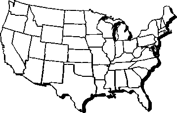
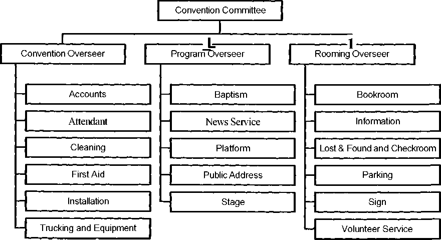
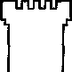

Convention
CO-1 5/97
No copies are to be made of any part of this manual or subsequent revisions. Only the brothers serving at a district convention for the current year should be given a copy of this manual and/or any revisions. They are the convention overseer, program overseer, rooming overseer, administration office assistant, chairman, and each department overseer. Twenty-two copies of any revisions will be sent to each convention overseer and are to be given to each of the above-mentioned brothers. When the committees select these brothers each year, if any do not have a copy of the manual, then the committees should order a manual for each of them on the Society's sign order form in the space provided. Each manual ordered will include a set of all revisions.
District Convention Organization
Convention Committee 2-1
Administration Office Assistant
Selecting Department Overseers and Assistants
Use of Regular Pioneers..............................................:
Use of Special Pioneers and Traveling Overseers
Convention Personnel Report Form
General Suggestions 3-1
Security of Equipment and Supplies
Special Comforts and Privileges......................
Selection of Personnel and Identification
Contributions for Surplus Items
Internal (Main and Change) Banks
Nonsufficient Funds—Cashed Checks
Nonsufficient Funds—Contribution Checks
Balancing Receipts and Disbursements
Attendance and Baptism Record.
Submitting Records to the Society
Assisting Delegates to Find Seats
Baby Strollers and Lawn Chairs
Outlines, Manuscripts, and Audio Recordings
Cleaning............................................;
First Aid, Safety, and Assistance Arrangement
Accident Notice Reports and Insurance Claims
Accident Investigation and Reporting
Society National Trucking and Equipment Pools
Society-Owned Tractors and Trailers
Maintenance of Society-Owned Tractors and Trailers
Consignment of Convention Equipment
IT IS thrilling to see the way Jehovah's people offer themselves willingly. (Ps. 110:3) This applies not only in the preaching work but also in organizing conventions to care for the brothers in a physical and spiritual way. It is truly heartwarming to see these individuals gladly volunteer their services to help make the conventions successful, working together in peace and unity, manifesting the fruitage of the spirit in all they do.—Gal. 5:22,23.
Over the years much has been learned relative to the successful operation of Watchtower Conventions. While not all of the knowledge acquired could possibly be printed, some of what has been learned is set out in these instructions as basic guidelines. We hope this information will help improve the operation of the conventions in a way that will simplify and unify department organization. This will make the work load lighter for those who volunteer and accomplish the purpose of the convention, which is to build the brothers up spiritually and to give a further witness throughout the field.
EACH year, six to eight months prior to the first convention, the Society selects and appoints by letter the three members of each Convention Committee, made up of a convention overseer, program overseer, and rooming overseer. They organize and oversee the operation of one or more conventions that year. If a brother is not used on the Convention Committee for a year or so, he should not feel he failed in some way. The Society desires to train others as well as spread out the responsibility. Of course, a brother may not be appointed for a time if he fails to respond after repeated counsel.
This assignment will require much time and effort, so those invited should prayerfully analyze their personal circumstances in regard to the time available and their family and congregational obligations and determine if they are in a position to accept the invitation to care for this assignment.—Luke 14:28.
Except for the chairman who is appointed by the Society, the committee is to select and appoint all department overseers and their assistants, including the administration office assistant. These selections should be completed and the brothers informed by January 15, so they will have adequate time to obtain volunteers and to organize fully their departments. Elders should be used if at all possible. They are responsible to make sure that all necessary arrangements are made for the successful operation of the convention. All correspondence and telephone calls to the Society should be directed to the Society's Convention Office by members of the Convention Committee only, not by department personnel.
While the convention, program, and rooming overseers are to show initiative in matters under their supervision, they should regularly consult with each other. Since each committee member shares equal responsibility for the operation of the convention, major matters should be discussed and decided by the committee with the convention overseer serving as chairman/coordinator. (Prov. 15:22) By humbly working together, the convention will receive unified direction and function smoothly.
The committee should be available in the convention city, as needed, during the weekend before the convention as well as the convention week. During the convention, at least two members of the committee must be on hand at all times when the building is opened until it is secured in the evening. As a caution, during the convention any necessary Regional Building Committee or Hospital Liaison Committee meetings should be kept to a minimum and not cause oversight of the convention to suffer.
If there is more than one committee serving in a city, the principle of good communication should apply in their dealings with one another. Matters such as stage design, department locations, and so forth, should be on the agenda at joint meetings when decisions are made that will be binding on all. The Convention Committee for the first convention should take the initiative to see that the first meeting is held.
At times, individuals come to the Administration or Chairman's Office with personal or congregational problems. Rather than get involved in these matters, it is advisable to help these persons to see the wisdom of approaching their own elders. They should be encouraged to listen to the program, as this may provide needed spiritual counsel to aid them in dealing with their problem.
Convention Committee members are selected because they are spiritual men and have a love for the truth and a desire to serve Jehovah and their brothers. All of them should be mindful of following Bible principles in dealing with others. If problems develop, they should try to be of assistance to the brothers in a mature, kind way so they will be able to work together in peace and unity.—1 Pet. 4:8-10.
CONVENTION OVERSEER
This qualified elder serves as the chairman/coordinator for the Convention Committee. As such, he functions similarly to the way the presiding overseer does in the congregation.
PROGRAM OVERSEER
The program overseer is to oversee matters related to the convention program. He will assume the responsibilities of the convention overseer in the event he is unable to fulfill his assignment during the convention.
Both he and the chairman will receive copies of all manuscripts and drama scripts. He will also receive a primary recording of each drama for use only on the convention program. Program information, titles of releases, and so forth, are confidential until presented from the platform. The convention overseer will give him the supply of Gilead and Bethel applications and letters to give to the chairman. Upon the conclusion of the convention(s), the program overseer will return drama and music recordings to the attention of the Society's Tape Duplicating Department and will destroy all outlines, manuscripts, and drama booklets used by him and the chairman. The chairman will give the unused Gilead and Bethel applications and letters back to the program overseer, who will return them to the attention of the Society's Convention Office. He should also immediately send any defective drama or music recordings clearly marked as such to the Society's Convention Office.—See section on "Chairman" on page 4-19.
ROOMING OVERSEER
The rooming overseer should carefully study the Watchtower Convention Rooming Instructions sent by the Society each year and follow through accordingly.
The rooming overseer is to be located in the Administration Office with the convention and program overseers. A Rooming Department desk should be set up at an appropriate place in the facility for his assistant and keymen to handle routine rooming matters. Any problems for which they need assistance can be brought to the attention of the rooming overseer for handling.
ADMINISTRATION OFFICE ASSISTANT
The Convention Committee is to select an administration office assistant. He should be an elder that has previously served as a department overseer or handled a major role in the Rooming Department or Food Service Department. Additionally, you should feel that he would qualify to serve on a Convention Committee with additional training as administration office assistant. He should be a qualified elder so that when a member of the committee is not available, he can care for matters in harmony with their direction. Answering the telephone, giving direction, and handling problems of a minor nature in the Administration Office is an assignment that should be handled by a qualified brother. He may be used to make out confidential reports and care for other responsible matters at the direction of the committee.
He can attend committee meetings so as to learn their thinking on matters and may even give input, but the committee will make the decisions. In this way he will be receiving fine training for greater responsibility in the future.
DIRECTION OF THE WORK
Each member of the committee will supervise the function of several convention departments through the respective overseers as shown in the chart on page 2-3.
No departments should be combined under one overseer or eliminated because a convention is small or is in an Assembly Hall. If there is not much work for a department, fewer volunteers are needed, and it is still good training for future growth.
Department overseers have the responsibility to organize their departments. However, the convention, program, and rooming overseers should regularly check with these brothers to see what their needs are, making sure that everything is functioning properly and is well organized. To do this properly will require that committee members make rounds each day during the convention to look for areas where they can help the brothers to improve their departmental operations in harmony with the Society's instructions.
District Convention Organization
SELECTING DEPARTMENT OVERSEERS AND ASSISTANTS
As soon as the Convention Committee has been appointed by the Society, they should meet to decide who will be invited to serve as department overseers and their assistants, except for the chairman, who is appointed by the Society. Department overseers may select their own key personnel. The list sent by the Society of all congregations assigned to each convention designates the area from which brothers may be selected for positions of oversight. Local brothers should be used for these positions of oversight instead of traveling overseers, whose primary work is visiting the congregations. Generally, it is not practical to invite brothers from outside the assigned area to serve at a convention. It is best to train and build the convention organization within the area assigned to that convention. If the services of a brother assigned to another convention become necessary, this needs to be approved by the Convention Committee from the convention he is assigned to attend. The circuit overseers have also been requested to send their current lists of circuit assembly personnel to the Convention Committee by mid-December as an additional source of volunteers.
If a brother used in the past as a department overseer is not qualified or suited for the assignment, it would be wise to select another individual. The same would be true for the assistant overseer.
At multiple-week conventions, except for the Society-appointed rooming coordinator, no other brother is to serve as a department coordinator. Each overseer is responsible for the direction and function of his department. However, it is important for the department overseers to share pertinent information with each other so that there will be a smooth transition from week to week.
Careful consideration must be given to the availability of each brother invited to serve as a department overseer or assistant not only during the convention but also for preconvention work. Brothers, especially department overseers, must be sufficiently available prior to the convention to care for their assignments effectively.
It should be kept in mind that the objective of the pioneers is to advance the Kingdom work in the field and our desire is that pioneers be mainly involved in that work. Thus, when help is needed for convention-related work, effort should be made to locate those who are not in full-time service. Occasionally, it may be necessary to use regular pioneers in convention-related work due to not being able to locate others who are available. Before inviting regular pioneers to do convention-related work, their body of elders should be consulted to make sure they feel the pioneer is in a position to accept the invitation. If not, then they should not be used.
If problems arise in regard to the use of regular pioneers in convention-related work, bodies of elders and/or the Convention Committee should feel free to write the Society's Convention Office.
Crediting Pioneer Time
A regular pioneer must share in the field ministry each month. If regular pioneers are invited to do convention work, the committee should give them the following items the Society supplies: (1) A copy of the note of instruction to pioneers and (2) the Society's letter "TO CONGREGATION SECRETARY" in a sealed envelope. Also, at the end of each month they were used in convention-related work, they should be given (3) a Field Service Report form (S-4) with the number of hours spent in convention-related work shown on the back of the form and signed by a committee member.
The congregation secretary will credit the pioneer on his Congregation's Publisher Record card with his total field service time plus time spent in convention-related work, up to a total of 90 hours for any month he is used in pre- or postconvention work. Pioneers should not be allowed to count time for convention-related work during the days they attend their own convention. It would be well for any regular pioneers called in to have the above points explained to them in advance.
A traveling overseer may be appointed by the Society to serve as a committee member, if needed, or as chairman. However, the Society's objective is to train local brothers to serve on committees and free traveling overseers for their primary work of serving congregations. Also, special pioneers are not to be taken from their primary assignment in the field without good reason. Use of special pioneers at any time for convention work must be approved by the Society prior to inviting them to serve.
The request for special pioneers should include their names, the dates they are to serve, the reason they are needed, and the assignment planned for them. The Society will determine if they can be freed from their assignment to make their services available for convention work and will advise the committee. If the Society approves, then the committee can write and let them know of their assignment and that it is with the Society's approval if they wish to accept it.
Preconvention Work
A form is provided to the committee by the Society for requesting dates for any traveling overseers who are appointed to serve on the committee, but not for chairmen, who only serve the week of the convention. The date of arrival for those called in will always be on Tuesday by 1:00 p.m. If any traveling overseer called in is needed to serve beyond Sunday of the convention, it is preferable to have him serve only two full days, Monday and Tuesday. If he is needed for a full week afterward, he would be released on Sunday afternoon. Rather than doing several weeks of preconvention work, it may be better to call him in for an "island week" a month or two prior to the convention, then have him return to his circuit and begin full-time preconvention work a week or so prior to the convention. If he is called in for an "island week," these dates are also to be shown on the form. The form is to be returned no later than the specified date so the traveling overseer can have time to arrange for substitutes, vacations, and so forth. He should not be away from his circuit for long periods but may use a day or so from time to time for necessary convention work while serving congregations during the months prior to the convention.
Those appointed as chairmen should report to the convention committee on Tuesday by 1:00 p.m. the week of the convention to care for their assignment. They will be released Sunday after the convention.
Caring for Expenses
A traveling overseer appointed by the Society to work at a convention may submit his convention-related expenses to the convention. They would include what he would normally turn in to a congregation that week. Unless he is serving as the chairman, he can request to attend another district convention to listen to the program. His expenses, if requested, for an additional convention will be cared for by the Society, not the convention. A traveling overseer may choose to volunteer during the convention; however, he will not be entitled to attend another convention. Traveling overseers not appointed by the Society to work at a convention will submit their expenses to the Society, not the convention.
For a brother to be a department overseer or an assistant overseer in the convention organization, he should be an elder. If the committee wishes to use a brother not presently appointed as an elder in the local congregation due to his just having moved from one congregation to another, it would be well to check with his congregation elders first to see if he received a favorable letter from his previous congregation. If so, then he could be used. The same basic Scriptural requirements for oversight in the congregation will apply to the convention organization. Unbaptized persons may volunteer to work but cannot have a position of oversight.
It is important that all of those in oversight, whether Convention Committee members, department overseers, or anyone in the convention organization, should give instructions in a loving manner. The brothers appointed to serve in these assignments should be ones showing the fruitage of the spirit.—Ex. 18:21; Gal. 5:22,23.
We want to be sure that all volunteers leave the convention happy for having the privilege of attending and serving in the convention organization. A harsh word could easily mar an otherwise fine theocratic experience that one would have had. There are many new ones accepting the truth and some may become anxious or hurried, but if responsible brothers handle matters in a mild-tempered way, displaying the fruitage of the spirit, it will serve as a fine witness even to such new ones. Those who are department overseers are not to be viewed as bosses, nor should they act like such. Volunteer workers should never be afraid to talk to an overseer or to key personnel about a convention matter, nor should the committee be offended if someone approaches them about a problem or makes a suggestion.
Use of Sisters
Good judgment should be exercised in using sisters in departments and offices where their husbands are located. Neither the Convention Committee nor the department overseers should give their wives a work assignment where they would be supervising or directing others. There is no objection if the wives work in the same department with their husbands, providing their assignments are in keeping with what is stated here.
In harmony with the need for training brothers for future use on Convention Committees, it should be explained to the eight brothers who are requested to fill out the Convention Personnel Report forms (CO-53) that part of their assignment is to observe closely and report on any department overseers or other brothers they feel are qualified to be on a committee or have that potential with training. Space is provided for this on the form. Therefore, as soon as the forms are received, the convention overseer should have someone type in the names, addresses, and statistics on each form (do not photocopy) and give them immediately to those designated to fill them out. Each one should be instructed to complete and mail the form, not a photocopy, directly to the Society, marking their envelope to the attention of the Convention Office, no later than one week after the convention.
If the one making out the report feels a brother he is reporting on is seriously lacking in a certain respect, he should speak to the brother about his deficiency before making the report. He should show in the space provided on the report what counsel was given and the brother's reaction to it if it involved his attitude or fruits of the spirit.
Though not required, if any committee member feels there are points of interest or suggestions relative to the facilities or functions of the convention he would like to make, he may send in a separate brief report to the attention of the Society's Convention Office.
No date for the convention headquarters to open full-time is being set, since much of the work is done from the time the Convention Committee is appointed until the convention begins. Very few persons, if any, will be needed full-time during the week or two prior to the convention, thus eliminating the need for housing, food, and so forth. However, diligent attention must be given to good organization. We do not want to build up an unnecessarily large full-time preconvention staff nor have the office open full-time if not needed. Sometimes for smaller and well-organized larger conventions in facilities used from year to year, it is not necessary for any full-time preconvention work to be done. It may only require some evenings and weekends a week or two prior to the convention. If we can arrange to simplify and care for the work in less time, this should be done.
During preconvention work, as is done during the convention, volunteers should care for their own food needs. Usually, they can have breakfast at home and bring a lunch with them. If a day to clean the facility being used is planned, the brothers and sisters should be encouraged to bring their own food, since none will be provided by the convention or local congregations.
Preconvention Facilities
Usually a Kingdom Hall is used for the preconvention headquarters. However, in some places the preconvention arrangements have almost crowded out the local congregation. The Convention Committee should wisely determine what is practical and feasible under the circumstances. If some additional space has to be obtained for gathering equipment or for the installation department, the brothers may have other space available that can be used. The convention will want to offer to care for any additional expenses incurred by the local congregation because of the preconvention work (such as electricity, telephone, and paper goods) and should have an understanding with the local elders regarding this before finalizing the use of their Kingdom Hall.
Preconvention Mail
Often, whether a Kingdom Hall can be used ' for preconvention work or not, it can be used for the preconvention address where mail can be directed. If there are multiple conventions in the same city, it is not necessary that they use the same preconvention address. Each should use the most practical address for their operation. However, if a Kingdom Hall is not used for preconvention work or is not practical as a mailing address, perhaps a brother who has a business or personal post office box may be willing to let it be used as the address to which all convention mail can be directed. If the committee feels this is not practical and wishes to use a private home address, this will be allowable if the brother is in full agreement for his address to be used in this way.
At times the Society or others must send communications on important matters during the week or so prior to the convention(s). Therefore, it is important to have someone check for mail at the rooming headquarters address every day during the last week or two until the first day of each convention.
Preconvention Meetings
Since the initial hotel rooming work is begun over a year prior to the convention, there is normally no need to have a rooming or another special meeting. Of course, if the committee feels it is necessary, they may arrange a meeting with department overseers and their assistants a few months before the convention. The purpose is to be sure everything is coming along properly in preparation for each respective department and impart additional necessary instructions. If such a meeting is arranged, it should not last more than one hour. Then the committee members could split up and individually cover any necessary instructions with the respective department overseers they supervise. This should require only a few minutes with each department overseer, and he can leave as soon as the information regarding his department has been covered. Traveling overseers not serving on the committee should not be invited to such meetings, nor should food be served. There is no need to have family members attend, sing songs, or give a number of Bible talks about conventions and so forth, but just care for the necessary business at hand regarding the operation of the convention.
On rare occasions, for a large convention, especially at a new facility, the committee may feel they need to meet with congregation secretaries to impart instructions and provide them with their parking tickets, and so forth. This will be all right as long as such meetings are kept short and do not require the secretaries to travel long distances. Perhaps the committee could travel to two or three locations in order to reduce travel for the majority. Such meetings do not appear to be necessary every year.
ADMINISTRATION CARD
The Administration card (CO-19b) is not to be worn but is to be kept in the pocket and used like an identification card to get into restricted areas, except for the Accounts Department.
ALCOHOLIC BEVERAGES
These should not be brought to the convention site, in view of the fact that it becomes our Kingdom Hall during the days of the convention.
ANNOUNCEMENTS
All announcements must have the approval of at least one member of the Convention Committee. These should be prepared by the Administration Office or convention department overseers.
Announcements should not be made asking for baptism candidates or those who have heard favorable comments from outsiders to report to the News Service Department for personal interviews. This can be done privately by approaching those involved or who likely would hear such things. No doubt one or two announcements during the convention regarding liquidation of flowers, carpet, lumber, or other surplus items will be sufficient. Since the district convention programs no longer contain the location of various departments, in the first announcement period on the first day, it should be stated that if anyone needs directions to any convention department, he should check at the Information Department or ask an attendant. If a convention has another language group meeting in conjunction with it, their peak attendance should be announced during the final attendance announcement on Sunday afternoon.
An announcement as follows should be made during the Friday and Sunday morning announcement periods: "According to current tax laws, anyone making a contribution of $250.00 or more in cash, checks, or property on a specific day must have an acknowledgment letter in order to claim a deduction on his tax return. Anyone wishing to make such a contribution and claim a tax deduction should go to the Convention Administration Office and will be given an acknowledgment letter upon making the donation." The acknowledgment should be prepared by someone in the Administration Office on convention letterhead in accord with the sample letter shown in Figure 1 on page 3-2. It should be signed by the convention overseer, or one or two others he authorizes, and given to the donor after verifying the amount of the contribution and making sure the donor immediately deposits it in a contribution box.
Also, on Friday and Sunday mornings, an announcement should be made that anyone making donations by check should make their checks payable to "Watchtower."
BIBLE AND TRACT SOCIETY OF NEW YORK, INC.
WATCHTOWER CONVENTION
(ADDRESS) (DATE)
(NAME AND ADDRESS)
$XXX.XX
Dear (Name of Contributor):
Your kind contribution as indicated above was received on (DATE). The convention desires to thank you for your interest in the important work that your donation helps to support. The contribution was received without any goods or services provided to you in return.
The contribution you made will assist in this important worldwide Bible education campaign that has been undertaken by Jehovah's Witnesses today. Certainly, Jesus set the example in this public preaching campaign, confident that Jehovah would help him complete every aspect of his assigned ministry.
We rejoice with you as the Word of God keeps on growing as an increasing number of individuals bear witness to the truth.—Compare Acts 6:7.
Supporting Kingdom interests with you,
For the Administration Office
(THIS IS A SAMPLE ONLY AND SHOULD BE RETYPED USING YOUR CONVENTION LETTERHEAD)
BUSINESS CARDS
If needed, Watchtower Convention business cards can be obtained personally by members of the Convention Committees, contract representatives, regular rooming negotiators, and News Service overseers. The Society's logo should not be used. A sample copy of any card that has been printed should be sent to the Society's Convention Office.
A supply of convention letterhead and envelopes will be mailed each year by December 1 to the brother who is coordinating the rooming work for the convention(s) in each city. Whether the city has multiple conventions or not, he should immediately give each convention overseer his share of the supply of letterhead and envelopes as soon as they are received, in accord with the quantities shown for each on the packing list enclosed with the shipment. This will permit the Recommended Lodging List(s) and correspondence to the congregations to be prepared by each convention.
Society convention letterhead is not to be printed locally. Please do not go to the expense of printing or photocopying the headquarters address on the letterhead. The address should be part of the master copy when photocopying multiple letters to congregations, and so forth, and typed on individual letters. You may have the return address printed on the envelopes, stamp them, or attach a preprinted label. If additional letterhead and/or envelopes are needed, they should be requested through the Society's Convention Office.
Convention stationery should be used for official business only. There is no need to waste time and stationery by writing letters reiterating instructions in Society letters or Our Kingdom Ministry articles. It is also inappropriate to use it for personal letters, poems, cartoons, signature lists, and greetings to preconvention workers at other conventions. Time, materials, and postage are involved, and this is not a proper use of the Society's assets.
All letters on Watchtower Convention letterhead must be approved by a member of the Convention Committee or someone designated by them so as to make sure that instructions, requests, and directions are not duplicated or sent out without authorization. The words "WATCHTOWER CONVENTION" should be typed in uppercase where a signature is normally placed on such letters.
DISABLED
The Convention Committee should arrange for an area near a convenient entrance where the disabled and elderly may be dropped off and/or have parking set aside close to an entrance where they can park and enter the building, if available. Also, they are not to be relegated to a remote section in the audience but given a convenient location that is easy to reach. They are to be able to see the platform and have rest rooms easily accessible if possible. No doubt relatives, those who bring them, or others from their congregation can assist with their needs. Efforts should be made for these to have seats next to or near the one(s) they are assisting. The attendants should carefully monitor these arrangements.
ELDERLY
In addition to a convenient drop-off and/or close parking area for the elderly, the Convention Committee should arrange for an organized saving of seats for those who are 65 years of age and over. This can be done by reserving sufficient seating in the most accessible and convenient locations either on the floor or near the corridor where they enter the seating area, and so forth. An announcement should be made so everyone will be informed of what has been arranged, and the attendants are to supervise such seating areas.
EQUIPMENT
Prior to renting or purchasing equipment, the Convention Committee should obtain approval from the Society's Convention Office. It is best to borrow equipment rather than rent or buy it. Often it is not practical to buy expensive items that will only be used one week and then have to be stored the rest of the year. If certain equipment must be purchased or rented, the Society may already have a good source or may have guidelines for standardizing such equipment with what is already being used in convention operations.
The Society requires an accounting from the Convention Committee for the funds they handle, but we trust our brothers and leave it up to the discretion of the Convention Committee to decide what smaller things must be obtained for the convention operation.
FINANCES
The purpose of the convention is to provide spiritual food for the brothers to build them up. Everything else is secondary to that purpose. We want to give a fine witness to the Kingdom and help people come closer to Jehovah God. No doubt everyone who listens to a convention program will be thankful to Jehovah for the rich spiritual food that he has provided and will be moved to contribute accordingly. Of course, Convention Committees will want to be very careful in regard to spending money so as not to waste such contributed funds that are needed to care for the worldwide work.
Convention funds may not be used for travel or other expenses of anyone to attend the convention or to share on the program. If someone is invited from Bethel or elsewhere, he must pay his own travel expense or the expense must be cared for from some other unsolicited private source. Individuals in the dramas are to absorb the cost of their costumes and makeup, if any. The local convention organization may assist with prop expenses from convention funds, if necessary, and the program overseer should be consulted prior to purchasing any items for which reimbursement is required.
FORMS
Each convention will be shipped a supply of convention forms addressed to the Convention Committee to be used as outlined in the Society's instructions. If any forms (not letterhead) the Society supplies run short, they may be photocopied (or printed, if inexpensive) as needed. Since these forms are consigned annually and at times are revised, they should be discarded after the convention season. Badge cards and holders will not be sent, since they are obtained in the congregations.
In the above shipment, there will also be an envelope with two copies of the following forms, which can be duplicated as needed:
Attendant's Instructions (CO-23) (Spanish: CO-23-S)
Equipment Record and Receipt (CO-30)
Delivery Order (CO-31)
Purchase Order (CO-52)
Transfer of Literature (S(d)-19)
PARKING
If a parking area is controlled by the building and a charge is made by the management for parking, then the Society endeavors to get it included in the contract without additional cost. If this is not possible, we negotiate a buyout for a reasonable flat fee. If this is done, the convention would run the parking lot with its own volunteers and the Society will advise the committee by letter how much the parking contribution should be, which helps defray convention expenses. This contribution will normally be well below, never higher than, what the building charges per vehicle for an event and would include in-and-out privileges.
A supply of parking tickets can be ordered from the Society on the sign order form sent to each Convention Committee.—See section on "Parking Tickets" on page 4-2.
If parking facilities not controlled by the building are bought out by the contract representative or Convention Committee and operated by the convention, it is necessary that they be included in the Society's liability insurance. The following information is to be sent to the attention of the Society's Convention Office:
1. Name of owner and names of all parties to be named insured.
2. Address or location of premises to be insured.
3. Dates to be covered.
4. Number of cars lot will accommodate.
5. Owner/operator federal Employer Identification Number.
As soon as available, a few programs will be sent in advance to each committee for use by the departments. Each department may be given a copy of the program prior to the convention. Later, the attendants will give programs from the regular shipment to the delegates as they arrive at the convention. The program overseer will provide the Information Department, News Service Department, and each member of the Governing Body in attendance a copy of the convention program with the name of the speaker for each part typed on it.
PROPER LANGUAGE
Proper language should be used at all times. Since convention personnel, including committees, are chosen due to their spiritual qualifications, it is important that each keep in mind the following Scriptural admonition: 1 Peter 5:2-4; Ephesians 4:29; and 1 Corinthians 10:31,32. If anyone is heard using improper language, they should be taken aside and lovingly counseled.
Some conventions have lost supplies and expensive equipment belonging to the Society and/or local brothers by thievery. Equipment has been lost at night and between conventions where we use the building two or more weeks in a row. It is the responsibility of each department to assign brothers to watch the equipment, money, and so forth, under their supervision carefully. It is best not to leave expensive items in the building all night or during the interval between conventions unless we are watching them at all times. Worldly guards have been known to steal the things they are guarding. It is important to be conscious of this, since the Society does not have insurance for such losses.
Separate American Sign Language (ASL) conventions are arranged for the United States. No arrangements should be made for Signed English at any of these conventions.
No provisions are to be made for sign language interpreting at any other conventions. If a deaf person shows up at a hearing convention with a signer, it is only allowable for one-on-one interpreting seated side by side, not in front of one or more persons.
If a person who is deaf and blind is in attendance at any convention, then the committee may allow for tactile interpreting if a qualified interpreter is available.
SPECIAL COMFORTS AND PRIVILEGES
If feasible, a room or an enclosed area with chairs, tables, and sound should be arranged for mothers caring for their babies. This should not necessitate the building of elaborate, costly rooms or the renting of trailers.
Some persons who are claustrophobic or quite ill or who have allergies to perfumes and chemicals often want a special section or room set aside for them to sit in. This is not to be done, since there is no practical way to care for their needs.—See May 1996 Our Kingdom Ministry, page 5, paragraph 21.
If a specific contribution is required for parking, it is reasonable that volunteers, including department overseers, contribute like everyone else. We expect Convention Committees to use discernment in cases of special needs, where a volunteer works at multiple conventions, or where a brother has volunteered his vehicle for convention use, and so forth. Special parking for administration is not necessary. Just a few reserved spaces for the convention operation are needed in addition to those for disabled, if available.
TELEPHONES
Telephone installation costs continue to escalate. Therefore, good judgment should be used in the number of lines installed at the preconvention headquarters, as well as at the facility. Perhaps there is already an existing phone that can be used, thus not requiring the installation of additional lines. Some telephone companies have a call-forwarding service that allows a telephone number to be switched elsewhere in the city. Sometimes this is less expensive than installing a temporary phone at the facility if they will let the convention use an existing phone. All options should be checked and the least expensive one selected that adequately cares for the needs of the convention.
Convention telephones should not be used for general volunteer service recruiting by departments, and so forth. All calls, especially long distance, should be kept short and carefully monitored to avoid excessive charges. Normally, cellular phones are very expensive to operate. In view of this, it is suggested that for convention business, such use be very limited whether one wishes to be reimbursed or not. Telephone switching equipment should not be rented or purchased without checking with the Society's Convention Office.—See section on "Equipment" on page 3-3.
THANK-YOU LETTERS
It is good to send thank-you letters to companies, city departments, management, building personnel, and so forth, who gave outstanding service on behalf of the convention. However, it is not recommended that thank-you letters be sent to volunteers, whether they have a large or small assignment. Appreciation can be expressed to them personally as we work with them or as part of other correspondence. Sending official thank-you letters can become burdensome, since they come to be expected by those receiving them and can cause hurt to others who do not. Of course, the committee may occasionally wish to send an official expression of appreciation for an outstanding or unusual contribution of goods or services made by a brother or sister. We leave this to the judgment of the Convention Committee.
VIDEO RECORDING
It is permissible for persons to videotape the program as long as it does not distract others. No provisions will be made by the convention for this, and the Convention Committee should make sure that any brothers choosing to videotape do not use lights or electric outlets, set up equipment in aisles or exits, nor stand in front of the stage. The news media may videotape under the supervision of the News Service Department. No FM or AM broadcasting or closed-circuit TV is to be used at district conventions without the approval of the Society.
ACCOUNTS
The following are Accounts Department procedures to be implemented at district conventions. No deviation from these instructions should be made, even though the brothers have served for many years and are very trustworthy. As an aid in following proper accounting procedures, a sample Convention Accounts Book (CO(d)-56a-e) is shown at the end of this section.
Part of necessary convention business is handling large sums of money. (Acts 6:3) To reduce the possibility of brothers coming under suspicion, at least two persons should be together with convention funds at all times in harmony with the principles found at 2 Corinthians 8:19-21.
All Accounts Department personnel should be recruited and known by the department overseer or keymen, rather than using unknown volunteers. Care should be exercised to use only mature, spiritual persons. This recruiting system is explained later under the section "Volunteer Service."
The Accounts Department must make up some form of identification for their personnel, which can be carried in their pockets to identify themselves. The Administration card cannot be used as authorization to enter Accounts Department areas. It is good to have the Accounts Department in as private a location as possible with an adequate number of watchmen they personally recruit stationed there.
Bank Account
If starting funds are needed several months in advance of the convention and are not available from parking tickets or a local source without interest, the amount needed may be requested from the Society's Convention Office.
When opening the bank account, effort should be made to obtain an interest-bearing checking account, perhaps with a savings account linked to it. If possible, service charges should be waived. If the bank will not waive the charges, perhaps an account not bearing interest can be obtained without service charges. It may be necessary to go to a number of banks to find one willing to do this. A smaller checkbook is recommended rather than a large costly one.
All information required on the bank signature forms should be filled in as fully as possible for an unincorporated, nonprofit organization account in the name of Watchtower Convention. Our federal Employer Identification Number (EIN) for bank accounts is 11-3092221 and must be put on the bank signature papers where designated. This number must be provided so as not to cause tax complications for the individual signers. This identification number is confidential and should be used only for bank accounts. Three persons serving at that convention(s), including the convention overseer and accounts overseer, should be authorized to sign, with any one signature sufficient to validate checks.
If there are no boxes to check on the bank signature papers showing that we are an "exempt," nonprofit organization or a statement that we are not subject to backup withholding, then an asterisk (*) should be put beside the Employer Identification Number on the form and the following sentence written in an open space below the asterisk: "*This account is held by an organization exempt under Internal Revenue Code 501(c)(3)."
If a Form W-9 accompanies the bank signature papers, the word "Exempt" should be written in the space provided under Part II that states: "For Payees Exempt From Backup Withholding."
As soon as the bank account is opened, photocopies of all the fully completed and signed bank signature papers that were submitted to the bank to open the account should be sent to the Society's Convention Office by the convention overseer after carefully checking them with these instructions. If the account is reactivated from the previous year, the Society's Convention Office is to be sent a letter by the convention overseer stating this, advising if the signatures remain the same, as well as providing the account number. If any signatures were changed, a copy of any forms that were altered must be included. These matters should be cared for several months prior to the convention.
Banks require that anyone depositing $10,000 or more in cash on one day give their name and Social Security number as a "cash transaction requirement," which is permissible. However, in view of this, it is imperative that the bank deposit record shows the federal Employer Identification Number and "Watchtower Convention" as the depositing entity. This is important so the brothers involved are not personally charged with depositing this money.
Preconvention Records
Prior to the convention, all money received should immediately be recorded in ink in a ledger (i.e., columnar pad). Each week the total of these receipts is to be entered in the Society's Convention Accounts Book. At no time is a brother to work alone on these matters. After the convention, this preconvention ledger is to be sent to the Society with the financial records.
For each group of conventions with a different convention overseer, a separate bank account, Convention Accounts Book, Vouchers, and Receipts, are to be used. Each convention is to pay the bills it incurs. It is recommended that multiple conventions combine their buying of stage materials, flowers, baptism pool, and so forth. However, there is no need to prorate these expenses for each convention. For example, the first convention can pay for the stage materials, and the last one can receive the contributions for them. This would also apply to other similar items.
If so advised by the Society, the convention will make parking tickets available to the publishers through the congregations for a specific contribution. The Accounts Department will prepare and send an order form to each congregation to use when ordering parking tickets. The congregations will take orders, collect the money, and send a congregation check to the convention to cover the order. The congregations should be instructed to send their check to the convention headquarters address shown on the order form. Any convention letter should use the word "contribution" when referring to the amount for each parking ticket. Since parking tickets are available for a specific contribution, they should be secured as if they were money.
There is no charge for literature or other items at conventions. Flowers, carpet, pools, lumber, and other surplus items may be liquidated for suggested contributions by marking them accordingly. While we are not selling them, the contributions should be placed in a nearby contribution box for that purpose. Conventions are not legally obligated to let persons take these items unless the suggested contribution is made. When such surplus items are liquidated, the total amount of the contributions received should be recorded in the "Other" column on the Receipts page (CO(d)-56a) with a notation identifying the item(s) in the "Transaction" column.
The accounts overseer is personally to prenumber in ink all the Receipt forms (CO-40) in duplicate (an original and a carbon copy bearing the same number). When money is received in the Accounts Department, several brothers will work together at the counting table. They should be informed of the source of the money and, as it is counted, fill out in ink a prenumbered Receipt form in duplicate. The carbon copy of this Receipt is to be sent to the Administration Office immediately. The original should be retained by the Accounts Department. If an error is later found in the original count, then both copies of the Receipt form should be corrected, with both the Administration and Accounts departments initialing the correction. If more checks are received than lines are provided on the Receipt form, then an adding machine tape with all checks accounted for may be stapled to the original form instead of entering them individually. In this case, a verification tape should be stapled to the duplicate Receipt form. No one is permitted to take money off any counting table until it has been counted, verified, and recorded on the Receipt forms. Also, no book bags, purses, and so forth, are to be permitted around or under the counting tables when money is being counted and recorded on the Receipt forms. An overseer is to be assigned for each table, and he is to see that all these instructions are followed.
All Accounts Departments have a main bank, and some have a change bank. Both are to be attended by at least two brothers at all times. These brothers will appreciate having someone present with them so as to avoid suspicion. •
When deposits are prepared, each slip should reflect the sum total of a number of Receipt forms, rather than just depositing surplus money on hand. Thus, it will be easy to check errors when auditing the accounts book. As deposits are made, these Receipt forms can be marked accordingly. The date on each check received must be noted so that postdated checks are not deposited until the date shown. This ensures that the funds will be available for the bank to honor the check.
All money received should always be counted, receipted, recorded in the accounts book that day, and deposited in the bank, if possible, or put in a secure place overnight. This reduces cause for suspicion or temptation.
Each bank statement is to be reconciled as soon as received to be sure it balances with the check stub record and the Convention Accounts Book. Not only is this a required procedure but it is used by the Society to audit the accounts and must be included in the records sent to the Society.
Change Making
No official provision for making change should be made. If anyone comes to the Administration Office with large bills and requests they be changed, it may be done. However, such an arrangement should not be advertised.
Check Cashing
In emergency cases checks may be cashed at the Administration Office. However, the person should bring an elder or a traveling overseer who knows him to vouch for the check, providing his name, address, phone number, and signature. It should be explained to the elder or traveling overseer that by vouching for the check, he is responsible for the amount if the check does not clear the bank. This makes it easier to get reimbursed if the check does not clear. If the person cannot find an elder, the committee will have to decide if they will cash the check or not. In any event, the name of the person's congregation should be recorded for future reference.
Nonsufficient Funds—Cashed Checks
If a cashed check does not clear, all avenues of getting it made good should be tried, including getting in touch with the body of elders involved, prior to sending the checks to the Society. Any cashed checks not made good that are sent to the Society with the financial records should be accompanied with a complete summary as to what efforts have already been made to collect each one. This will assist the Society to pursue them further. These checks are to be handled more vigorously than contribution checks that did not clear the bank.
Nonsufficient Funds—Contribution Checks
When a contribution check does not clear the bank, the convention should kindly write or call the person one time if an address or a phone number is available to see if he wishes to make the check good. If only the congregation is known, the presiding overseer can be asked to check kindly with the person once to see if he wishes to make the check good. If so, the person should be directed to send the funds to the convention address, appropriately marked as replacing his previous check. If there was a bank service charge to the convention for handling the check, the person should be given a chance to make that good at least, since the convention was charged for depositing his check. Then, in October when the accounts records are sent to the Society, the accounts book Disbursements page (CO(d)-56b) should clearly show each check that did not clear and show in a Voucher (CO-47) whether or not the person was reached. Any checks made good would show separately on the Receipts page with the notation that it is a recovered nonsufficient funds check. A sample letter for use when requesting such reimbursement is shown in Figure 2.
WATCHTOWER
BIBLE AND TRACT SOCIETY OF NEW YORK, INC.
WATCHTOWER CONVENTION
(ADDRESS) (DATE)
(SAMPLE NON-SUFFICIENT FUNDS CONTRIBUTION CHECK LETTER)
(NAME & ADDRESS)
Dear (Name of Contributor):
Enclosed is a photocopy of your check that has been returned to us unpaid by the bank in the amount of $_. (plus a service charge to our account of $, making a total of $)
Our records show that this check was a donation and if it is still your desire to make this contribution, please use the enclosed self-addressed envelope for this purpose. You will also find below the address and telephone number where you can contact our representative caring for this matter. We would appreciate your caring for this right away since our records must be forwarded to the Society very soon.
Your thoughtfulness in making this contribution is appreciated and we send an expression of our warm Christian love.
Sincerely,
WATCHTOWER CONVENTION
Enclosure
Watchtower Convention Representative:
Name: ________________________________
Address: _____________________________________
Phone:
Figure 2. Sample Nonsufficient Funds Contribution Check Letter
The Society consigns prefabricated cardboard contribution boxes to each convention in quantities of slightly more than 1 for every 200 attendees, except for conventions in Assembly Halls, which will use the permanent boxes. The boxes are only printed in English or Spanish. Where multiple conventions are using the same facility, the supply will go to the first convention in each language. Only the Society's boxes should be used and stored locally each year until they become soiled or broken. Any needed replacements will be sent by the Society with the literature shipments. If there is a supply of contribution boxes in or near the convention city, the Society will send a slip to the first convention using the boxes, indicating where the local supply is stored. The boxes fold flat when not in use and take up very little storage space. When using the boxes, the three bottom flaps are to be positioned flat against each other so no coins will drop out. No tape is to be used on them except to reinforce the front end of the tuck flaps neatly with smooth plastic shipping tape so they will not become frayed and hard to insert. The boxes should be kept neat and clean.
Each box should have a permanent number on the bottom and be assigned to a specific person who signs for it when he takes it. The boxes must never be left unattended. They should be placed in strategic locations, not only in the seating areas but also in the corridors, near entrances and exits, and so forth, but must not block traffic. At the Bookroom and at literature distribution points, there should be sufficient boxes nearby so they are visible and convenient for delegates to contribute if they desire. The number of boxes put out each day should be at least 1 for every 200 persons in attendance. One qualified and dependable volunteer is to be assigned to watch each box.
The first shift should put their boxes out as soon as the doors open each day and remain until the song for the first session begins. The next shift should put their boxes out during the closing song for the morning session until halfway through the noon intermission. The next shift will relieve those on each box halfway through the noon intermission and remain until the song for the afternoon program begins. The final shift will bring their boxes out during the closing song for the afternoon program and stay until the crowd has left that area for the evening. During the noon break, no one on the first noon shift should leave their assigned location until their replacement, with proper identification, arrives. Key accounting personnel with such identification can take replacement volunteers around to relieve those watching boxes. Each one should sign a list showing they were relieved of their numbered box and show the name and signature of the replacement person so it is known who is to watch it and return it. As a suggestion, two sets of volunteers could rotate to every other shift, and in this way they would work only two shifts each day. Only brothers, no sisters, should be assigned to boxes that are placed in more isolated or open areas. Strategically place a few boxes at appropriate entrances and exits all day long, even during the program, for those who come late and leave early. It should be arranged for those watching these boxes to be able to hear the program.
A well-qualified keyman is to be selected to oversee the contribution box operation. He can help recruit those needed to watch the boxes, distribute them, empty them, and get the funds back to the Accounts Department. Those assigned to watch the boxes should be instructed where they are to take them at the end of their shift. Under no circumstances should they allow anyone to pick up or take anything out of their box, even though they identify themselves as being from the Accounts Department. They should personally return their box to the designated location to be emptied at the end of their shift, except for those relieved during the noon break as outlined above. This will eliminate the possibility of anyone impersonating someone from the Accounts Department and taking the money under false pretenses. The boxes should be checked in each time to make sure that none are missing and were returned by the assigned person. Boxes should not be taken to the Accounts Department to be emptied. They should be emptied (money not counted) in a secure place(s) in the presence of several brothers. These brothers, as a . group, should take the money to the Accounts Department for reasons of security and protection. When not in use, the boxes should be stored out of sight so as not to draw attention to the location.
Those watching boxes should pay close attention to them so that no one can walk off with one. It is possible that an impostor could set up and watch his own box. Therefore, a few dependable brothers are to be assigned to check the box locations regularly to see that each one is giving proper attention to his box and to look for counterfeit boxes. These brothers should be given a chart showing the location of all boxes so they know exactly where to look.
The last convention using the Society's cardboard contribution boxes should select a dry, protected place to store them for the next year. At the conclusion of that convention, the boxes must be checked for any unsightly or broken ones and these are to be destroyed. Then the convention overseer for the last convention should immediately return the slip provided by the Society to the Convention Office with a count of how many reusable boxes there are and the name and address where they are stored.
Many conventions do not use petty cash funds, since only a few smaller items are needed during the convention. Often the brothers just purchase these items with their own money and turn in the bill that day or the next for an immediate reimbursement from the Accounts Department. However, if it is needed, each petty cash fund will be established by a check written to the brother to whom it is assigned. The Accounts Department may then cash the check for him. Anyone who receives petty cash for authorized purchases should return paid invoices or cash equal to what they received.
The entries in the accounts book to establish petty cash funds should be noted in the "Transaction" column of the Disbursements page in parentheses—not in the amount columns—along with the name of who received it. The check number should be entered in the appropriate column. The amount should also be entered on the Petty Cash page (CO(d)-56c) of the accounts book in the "Received" column. Any reimbursements to bring the amount back to the predetermined level would be made by check in the same way. When such payments are made, a Voucher will be made out and the supporting invoices attached to it, with appropriate entries made in the amount columns of the Disbursements page of the accounts book. The amount(s) should also be itemized in the "Paid" column on the Petty Cash page with a description in the "Transaction" column showing who received it and how it was spent. When the remaining petty cash is returned by each brother at the end of the convention, the amounts will be entered in parentheses in the "Transaction" column of the Receipts page of the accounts book, along with the name(s) of who returned it. Of course, appropriate closing entries would also be made in the "Paid" column of the Petty Cash page of the accounts book to show a zero balance.
To assist the Accounts Department with some of the accounting procedures in connection with the Convention Accounts Book (CO(d)-56a-e), a sample book with various types of entries is shown in Figure 4 through Figure 8, on pages 4-11 to 4-14.
Entries in the accounts book should be hand-printed legibly in ink with any errors crossed out and a new line used. Entries should not be typed, entered into a computer, or recopied in a book to make them neat. The Society wishes to have the original book for auditing purposes.
Receipts and Disbursements
Whether receipts or disbursements are cash or check, they will be entered in the amount column and then reentered in one or more of the other columns showing the source. Some disbursements, such as for lumber, may have to be divided proportionately between two or three columns, such as "Auditorium," "Office," and so forth. This can be done according to the approximate percentage that will be used for each.
An item is either a receipt or a disbursement, and it should be so entered in the accounts book. For each entry under "Transaction" in the Receipts or Disbursements pages of the accounts book, sufficient words should be used to describe the transaction. Further detail can be given on the Voucher or Receipt form.
All purchases and invoices must be approved and initialed by the convention overseer before any payments are made. When bills are approved for payment, they should be vouchered with receipts or invoices attached using the Voucher form (CO-47) provided by the Society, after which they are to be entered in the accounts book. Receipts or invoices should indicate the name of the item, not just product codes. Bank service charges should be entered using the bank statements as a basis. Entries in disbursements should be separated like this:
• OFFICE: Stationery, telephone calls (not equipment), postage, expenses for the
preconvention office, etc.
• AUDITORIUM: Stage material, flowers, rest room supplies, paper goods, etc.
Any payments to the facility (e.g., equipment rental, personnel, garbage removal).
• MISCELLANEOUS: Batteries, baptism pools, first aid supplies, trucking expenses, nonsufficient funds checks, bank service charges, etc.
• OTHER: Shuttle service, parking refunds and rentals, dormitory rent and refunds, etc.
Balancing Receipts and Disbursements
The Receipt and Disbursement pages are generally balanced daily during the convention and weekly before and after the convention. Each time this is done, totals of all columns in receipts and disbursements may be shown lightly in pencil so as not to be confused with entries. In receipts, the total of the "Amount" column should equal the sum of the totals of all the other columns. In disbursements, the sum of the "All Payments" columns should equal the sum of the totals of all the other columns. Then the amount in the bank as shown on the check stub record, plus the change fund and/or petty cash should equal the difference between the total of receipts and the total of disbursements.
Financial Report
This page (CO(d)-56d) of the accounts book should be completed when the final check is written, using the totals from corresponding columns in the Receipts and Disbursements pages of the book. The net receipts should equal the total returned.
Attendance and Baptism Record
The appropriate figures requested on this page (CO(d)-56e) are to be accurately and completely filled in for each convention covered by the same convention overseer.
Special Needs Room Requests
A record is to be made of how many total special needs hotel rooms and private homes were used and the name of the brother keeping the rooming files for seven years.
First Aid Records
The name and address of the elder holding the first aid file for seven years is to be provided.
Literature
If there was too much literature or too little, the quantity received and the number of any left over or an estimate of the additional quantity that could have been used of the item(s) that ran out are to be listed.
Convention Forms
If there were too many or too few convention forms received, the quantity received and the number of any left over or an estimate of the additional quantity that could have been used of those that ran out is to be shown. Leftover forms should be discarded, except for the Bethel and Gilead applications and letters, which are to be returned to the Society by the program overseer.
Surplus Checks
Periodically prior to, during, and after the convention, the Society's Convention Office is to be sent surplus money as it accumulates, keeping only enough money to cover any outstanding bills. The check for the major portion of surplus money should be sent to the Society no later than one week after each convention and made payable to Watchtower Bible and Tract Society of New York, Inc. The only money retained in the account beyond a week after the convention should be for any remaining bills.
Submitting Records to the Society
It is important to make sure all ' outstanding bills are paid, the latest bank statement is reconciled, and the Financial Report page in the accounts book agrees with the bank statements and check stub record. It is the responsibility of the accounts and convention overseers to see that all pages of the accounts book have been properly filled out by the departments involved and that none of the pages are missing when the book is returned to the Society.
The convention overseer should check all records for accuracy and completeness and send all the accounts records for his convention(s) to the attention of the Society's Convention Office as soon as completed, but no later than October 15. These should include the items on the checklist shown in Figure 3 on page 4-10, along with a copy of the completed checklist that will be sent along with each account record book.
Unless local funds are used, all bank accounts should be closed out no later than October 15. When the check is written to close the account, the amount, including any interest, should be verified with the balance shown by the bank, making sure all checks have cleared, which eliminates problems of overdraft and service charges. If it is an interest-bearing account, a bank check should be obtained to close it so no residual interest creates service charges and overdraft problems that would occur if a regular check was used to close the account. Each bank statement is to be sent to the Society's Convention Office by the convention overseer until it shows a zero balance.
In cities used from year to year, some brothers use a very small amount of local funds to keep the account open. This is permissible if there are no service charges and a bank statement is sent to the Society's Convention Office by the convention overseer with the final balance marked as local funds for that purpose. If this is not possible, perhaps a larger minimum balance of local funds could be used to keep the account open, as long as there are no service charges. '
We trust that by following these guidelines at all conventions it will increase security and reduce the chance for anyone to be unnecessarily tempted or suspected when handling funds entrusted to them.
FINANCIAL RECORDS CHECKLIST
(To be completed and submitted to Society by convention overseer on or before October 15th)
Convention:______________________________________
1. Convention Accounts Book (CO(d)-56a, b, c, d, e)
Please submit original hand-printed book, not a computer copy or typed copy.
_ ____ 2- Preconvention Receipts Ledger
______ 3. Original Receipts (CO-40)
Bundled in numerical order.
Please do not attach deposit slips.
Convention overseer to add duplicates bundled in numerical order when he mails the records.
_______4. Check Stub Record
If unable to send book, please photocopy appropriate pages.
5. Canceled Checks
Bundled in numerical order.
Please do not leave in Vouchers or taped to stubs.
_____ 6. Deposit Slips
Bundled in date order.
Please note which Receipts (00-40) are included in each deposit.
_____ 7. Bank Statements
Stapled in date order, with latest on top.
______ 8. Vouchers (Folded, Invoices inside)
Folded so that front can be read.
Invoices stapled once to the Voucher and folded inside so they can be read when Voucher is opened.
9. NSF Checks (With explanations)
Please include copies of letters you have sent and any replies or notations on results of telephone calls in the corresponding voucher.
10. Final Check
Includes all convention funds.
Close bank account if unable to inactivate it without service charges.
(00-8)
Figure 3. Sample Financial Records Checklist
RECEIPTS
|
Date |
Transaction |
Net |
Amount |
1 *" I Ixan |
Invoice |
Paid | ||||||
|
S71 |
L-acaL fiwih IA t’^pS*.©©'! |
■ | ||||||||||
|
5710 |
hj.?. CifcuTT W'l ^Avo<l44 fyflAj'1 |
l.C©£> |
63 |
i-oce | ||||||||
|
573* |
LscMiJv^id |
33 |
2 |
OO | ||||||||
|
6/5 |
TidUTs (r/l - £ |
3,000 |
63 |
2.OCO |
00 | |||||||
|
PflA;n<i Tk^Tf <p/S - Lfe |
–2,000 |
63 |
2.000 |
cc | ||||||||
|
4/22 |
SkwTTlft Svsc* |
2,-2ffO |
53 |
2.C7O |
00 | |||||||
|
GPP |
T^ktT, v/n -32 |
1,300 |
63 |
I.IQC | ||||||||
|
4/22 |
SUuTTl* Swat* |
1,400 |
63 |
L'iCO |
00 | |||||||
|
7/31 |
6mJv-1 111 •* l»STti"4<T |
L| |
63 |
M | ||||||||
|
TL |
I |
M.IOO |
63 |
<3.100 |
00 | |||||||
|
Tk |
f - fOflirl |
3 |
5.307 |
63 |
5,307 |
00 | ||||||
|
Ti |
Pj^k^o, TkUT* |
3 |
35© |
63 |
370 |
00 | ||||||
|
tl |
Sk jTFlt, Quitr |
4 |
4OT. |
33 |
M27 |
00 | ||||||
|
T4 |
C-iMTribvTiMi - Cv*Ai-ns |
r |
■2.700 |
63 |
2.700 | |||||||
|
Tp |
'i_.*'5Tr;ta<JTlirtf ■ f*1 or in i a ft |
6 |
3,50© |
33 |
s.00© |
00 | ||||||
|
T2 |
Gn<TrfiWT-*n< - |
7 |
4.000 |
63 |
fe.Oop | |||||||
|
7/2 |
T'ltKeTs |
<? |
375 |
63 |
■217 |
00 | ||||||
|
V2 |
SViiJTTlc ^utti |
<4 |
see |
83 |
300 |
Gt? | ||||||
|
TP |
G$/Tf''bvT'*A« ' CvcAir'iq |
IO |
2,000 |
53 |
7,000 |
63 | ||||||
|
7/3 |
GwiTzibJTlwif *■ T^ifri i |
Ik |
4,227 |
63 | ||||||||
|
T3 |
GfXT^ibvT'MS - ftJavri |
IP |
4,000 |
£5 |
4,070 |
63 | ||||||
|
7/5 |
P4TT>i CmIa- ftiTviVitA - 75, WfiT.OO) |
■£ |
| | | |||||||||
|
ts |
P*i-VrA<i |
R |
orc |
63 |
□rc |
cc | ||||||
|
T3 |
SkvTTIi Buru |
kS* |
227 |
63 |
207 |
00 | ||||||
|
T3 |
G^<(T<,bkiiJT'LO<",t *- ET'Jt-'i rfM, |
14 |
1,000 |
S3 |
1,000 | |||||||
|
7/3 |
Ftawifi ’ STme |
P |
471 |
63 |
MTS’ | |||||||
|
T3 |
BapTiR-'i PmI |
k£ |
700 |
83 |
700 | |||||||
|
T3 |
Cjrp/T - ‘TTdiit |
H |
270 |
37Q |
ebI | |||||||
|
T4 |
PCTTm GaA, - H^ijrrteJ - 6. Frx/J dHO^OO |
20 |
[ | | |||||||||
|
TSI |
6-poA'irJ'il'l BcKlfc - lHT*.r*fT |
40 |
63 |
40 |
00 | |||||||
|
<3/12 |
<hf. <_w, fc^pfcoJ , <_?, 3*W * HOOO '-k.’T |
47 |
63 |
47 | ||||||||
|
9/11 |
B*.W TektpUcine •■ (2a4v^J |
22 |
15 |
E |
17 |
00 | ||||||
|
A/P |
G |
25 |
170 |
Sa |
170 |
Co. | ||||||
|
«/3* |
G.S Bank ■ Account |
□ |
BS |
2 |
co. | |||||||
|
S/31 |
626 Wall St. - «<■ |
MO |
MO |
Co. | ||||||||
|
Totals ctAii Coknne » |
57.45 |
25 |
1000 |
OO |
M't.sir |
co |
w-5177 |
□5 | ||||
ccosa
DISBURSEMENTS
face _ I _
|
But |
Trailer |
Check No. |
Mo. |
AIIF» Check |
Out |
Strict |
Office |
Amount |
Memo Inv |
Citer |
Water Power |
Cteete leSoeter | |||||||||
|
TrlO |
-0^*-,^u^fL CQ. __■ - |
iex |
1 |
<X |
[S |
-K |
CO | ||||||||||||||
|
GT |
G.S. - ES*’ CPOOOC* |
102 |
■ | ||||||||||||||||||
|
0 Wages / T-cffe- tfutfl |
03 |
2 |
30 |
£s |
•CO | ||||||||||||||||
|
3/10 |
G.S CCt - StijTl^ &j» OtaBST |
K?4 |
3 |
500 |
63 |
500 |
Co. | ||||||||||||||
|
WWT |
■tV'X- OtGcT ~ Luivixr |
tor |
4 |
LE© |
63 |
4TO | |||||||||||||||
|
4/30 |
On>7T%Al |
vois |
hcoo |
S3 |
500© |
Co. | |||||||||||||||
|
3/30 |
Cj.'S Bj» <L0. * <S^7TTt &4<i |
*07 |
6 |
3000 |
500© | ||||||||||||||||
|
3/30 |
•^XT6A KXrsarv <LC', ■ |
K*? |
•jgC-i |
63 |
■2STO |
CG | |||||||||||||||
|
Freight |
ICA |
-5 |
a-pso |
£3 |
2.250 |
cc | |||||||||||||||
|
fePO |
P<TT, iGwk - 7. |
IPS' |
cc |
ICS |
ce |
■20 |
c© | ||||||||||||||
|
4/30 |
S»7T>t/’‘i CW SjJbi' •- Pai |
lie |
1© |
SCO |
500 |
Co. | |||||||||||||||
|
4/3© |
ft ■• Ln - <SliRL |
HL |
U |
500 |
CO |
300 | |||||||||||||||
|
T1 |
pot? a?<?c-c<3 |
IL2 | |||||||||||||||||||
|
n |
nAk Gzajrm |
IIS |
b2 |
1000 |
Co. |
LOOO | |||||||||||||||
|
■M |
PcTTv' 'Lak-7 F.G |
1*4 | |||||||||||||||||||
|
Tk |
£^rt*Cfev P-'ri AfcrtflT |
IK" |
13 |
1,200 |
1 |
1200 |
ce | ||||||||||||||
|
TP |
P<TRf Gat, - G. |
h |
11? |
ES |
ISO' |
25 |
CO | ||||||||||||||
|
7<J |
PiTTn. (Lak - 7 EU(Z |
IS" |
hS? |
pd |
140 |
c© | |||||||||||||||
|
7/3 |
Pm,' L_=Vb - B. FykzJ |
120 |
r<-' |
12O | |||||||||||||||||
|
7^1 |
6pJvwd GaA - GkcdM |
27 |
c^* | ||||||||||||||||||
|
tm |
GcaMl G*->. - SvVfl- Ck^ei - l£-rw? |
40 |
40 | ||||||||||||||||||
|
l.*i |
hlSf. - C3. 7&TB |
r? |
£5 |
ST |
co | ||||||||||||||||
|
7S |
KlSf- ~ - G7. |
we |
EE |
IC? |
co | ||||||||||||||||
|
TT |
ft xttr Street GO, - jtM-J |
L1G |
IS |
7? |
7? |
co | |||||||||||||||
|
7'g- |
WT.B, t.T.5i CSu^Ul |
IT? |
Fl |
<?ccc |
£s |
o.coc |
co | ||||||||||||||
|
<V2 |
WTS £ T.S tfv^i «m*Wi |
II? |
PD |
4,170 |
fcj |
H*20 | |||||||||||||||
|
?9<4b of All Calums |
rg-5^3 |
& |
co |
1373 |
co |
cc |
to.^ed |
cc |
co |
co |
200 |
'X | |||||||||
CCN^M Printed
Figure 5. Sample CO(d)-56b
|
PETTY CASH _ City _______________Year 1891 J |
Checks written for petty cash to be recorded in “Transaction” column of Disbursements page. | |||||||||||||
|
Date |
Transaction |
Vchr, No. |
Received |
Paid |
Balance | |||||||||
|
J. Euker - T + E (Ck 102) |
-200 |
CO |
□DO |
CO | ||||||||||
|
Euker - <ms |
q |
QS> |
CO |
ISO |
co | |||||||||
|
7/30 |
Supplies |
q |
ICS" |
co |
co | |||||||||
|
7/1 |
G. Fischer - (CK U*P) |
400 |
co |
400 |
CO | |||||||||
|
7/1 |
S. Elder - T * E - P.O CCk 114) |
1ST |
co |
400 |
co | |||||||||
|
7/2 |
©< - Paper 6a>fc |
14 |
ISO |
co |
4S"O |
co | ||||||||
|
7/0 |
B. fvierj} - Post Supplies |
14 |
CK" |
co |
425- |
co | ||||||||
|
7/Q |
7X EUter - 'STacje Li.**iber |
1ST |
co1 |
4CO |
co | |||||||||
|
7/2 |
C. Euker - 6<k |
IS" |
30 |
co |
370 |
co | ||||||||
|
Record petty cash returned in "Transaction” column of Receipts page. |
A |
7/0 |
^3, EkJar - TrxxV^Tzt |
ir |
130 |
co |
2MO |
co | ||||||
|
7/3 |
TX Gfer - Casta GdTvjvwJ |
ISt |
co |
□□sr |
oo | |||||||||
|
7/3 |
Bi Fr 'iez^ - Paper Gqck+s |
it |
1QO |
QC |
os |
co | ||||||||
|
Vi |
8, Fr'*n3 - Casta ^tTwricJ |
ics- |
CO |
- o - | ||||||||||
|
CtXdbJfc 2/91 Printed in USA | ||||||||||||||
Figure 6. Sample CO(d)-56c
FINANCIAL REPORT
City SampleYear 1996
|
RECEIPTS | ||
|
Loans |
1,000.00 | |
|
Contributions |
44,315.00 | |
|
Parking Other |
2,800.00 | |
|
8,950.00 | ||
|
Total |
DISBURSEMENTS
Office
Auditorium
Food Service
Miscellaneous
Other_____________
Loan Repayments
2,850.00
1,900.00
800.00, 10,950.00
1,OOO.OO_
|
Total |
14,980.00 |
|
Net Receipts |
44,120.20 |
CHECKS TO THE SOCIETY
(Payable to Watchtower Bible and Tract Society of New York, Inc.) 4 0,000.00
4,120.25
Total Returned (Equals Net Receipts)
44,120.20
$20.00
Local Funds
(Multiple conventions under same convention overseer are to be recorded as one.)
CO(d)-56d 2/91
Printed in U.S.A.
Figure 7. Sample CO(d)-56d
City Year 1996
ATTENDANCE AND BAPTISM RECORD
(Use only days that apply}
Convention #1
|
Monday |
Tuesday |
Wednesday |
Thursday |
Friday |
Saturday |
Sunday | |
|
Morning |
5,800 |
7,300 | |||||
|
Afternoon |
6,450 |
7,105" |
7450 * | ||||
|
Evening | |||||||
|
Number baptized: | |||||||
Convention #2
|
Morning | |||||||
|
Afternoon |
• | ||||||
|
Evening | |||||||
|
Number baptized: | |||||||
Convention #3
|
Morning | |||||||
|
Afternoon |
* | ||||||
|
Evening | |||||||
|
Number baptized: |
•Public Talk | ||||||
|
SPECIAL NEEDS ROOM REQUESTS | |
|
Total Private Home Xoom Requests: 4 Rooms Assigned; 3; Total Hotel Room Requests: 0 |
Rooms Assigned: 2 |
|
Rooming coordinator or city overseer holding all rooming records for next convention: | |
|
Name „„„ .,,,,■ ,,,,,ril- „ ■■ n,,t Address ._______________M„..,_________tB________ City __________State -t2(____Zip — Jli.'SX— Telephone: Area Code ___31ST ____Number , J77. ~ ,333-ril11 | |
FIRST AID RECORDS
|
Convention overseer holding first aid file for safekeeping; Name ....................................................................................... | |
|
Address ________ |
1_________________________________________________ |
|
City __5stdEk-_„„....„„_- |
--State Zip __ |
|
Telephone: Area Code |
_212.____Number__717-1111_________ |
LITERATURE
|
ITEM** |
Number Received |
Number Left Over |
Additional Number Needed |
|
Awake! | |||
CONVENTION FORMS
|
FORM** |
Form Number |
Number Received |
Number Left Over |
Additional Number Needed |
|
1.000 |
"250 | |||
|
WATCH TOWER BIBLE & TRACT SOCIETY |
CO-4"? |
co |
IO | |
•‘To assist ns in future planning, please list only literature and forms of which you received loo many or too few.
CO(d)-56e 2/91
Printed in U.S. A.
Figure 8. Sample CO(d)-56e
ATTENDANT
At all times, including intermissions, attendants are to control seating and crowd decorum, monitor seat saving, hand out programs as the delegates arrive, and render whatever assistance they can. Sufficient attendants must be on hand when the building opens for convention personnel, and the remainder should be present no later than 7:30 a.m. to monitor seat saving when the doors open at 8:00 a.m. (or at 11:30 a.m. Thursday when the doors open at noon for a four-day convention). All attendants are to wear an Attendant badge (CO-19a) for identification.
It is preferable that attendants be elders or ministerial servants. They should be courteous, loving, kind, and properly dressed and groomed. Other fine points are covered in the June 15,1970, issue of The Watchtower, pages 380-2, under the topic "Showing Love for One Another at Assemblies," as well as each year in Our Kingdom Ministry convention inserts.
To help matters run smoothly, advance planning and recruiting should be done by the Attendant Department overseer, his assistant, and keymen. They should have a meeting ahead of time to discuss these instructions and local arrangements so they can let the attendants know what is required. Additional instructions are in the Attendant's Instructions sheet (CO-23), and a photocopy should be given to each attendant.
If the Convention Committee decides to close off any unneeded seating areas, the attendants should monitor these and prevent individuals from using them. If the Attendant Department finds that seating is becoming limited, they should obtain committee approval to open additional seating areas.
Attendants should stop youths from running, jumping, and so forth. Escalators should have an attendant stationed at the top and bottom of each level to supervise their use; attendants should know how to stop them in case of an emergency. If there are elevators in the facility at our disposal, these too should be manned by an attendant from the time the building is open until it is secured in the evening. This will help move delegates and prevent children from playing with the elevators.
The attendant overseer should inform each of the attendants that if an emergency arises, they should immediately get in touch with the Administration Office and Attendant Department for direction.
Attendant Count Cards (CO-24) are provided for captains and keymen so the count can be taken at appropriate times in order that the total attendance may be readily compiled by the Attendant Department. These figures are then furnished to the chairman and Administration Office. To ensure uniform attendance figures, the count should be taken simultaneously at a preselected time that will logically have the highest attendance for that session. Attendance figures may be announced after the final speaker of each session. To clarify who to count, see the December 1989 Our Kingdom Ministry, Question Box.
This involves an attendant stationed in his assigned seating area and another attendant where delegates are entering. As the delegates approach, he asks if they are looking for seats. If so, he signals with his fingers to the attendant in the seating area how many seats are needed and that attendant signals how many he has available. He knows how many seats are available by examining his area and checking with those sitting next to seats with items placed on them. Thus, he knows if the seats are occupied by someone who has temporarily left or if they are unoccupied. If his area is full, the attendant can check with attendants in other areas to see where seats are available and direct delegates accordingly. This gets individuals seated quickly without the frustration and distraction of walking up and down aisles looking for seats. For this arrangement to work, qualified, mature brothers are needed who are experienced and use good judgment.
Attendants should monitor closely any young people or others congregating off by themselves in remote seating and other areas. They should also monitor the corridors and in a kindly way approach and invite those talking and roaming around during the program to be seated. Those serving in various departments set up in corridors should not be talking during the program unless their duties require it. As noted in the May 1996 Our Kingdom Ministry insert, paragraph 9, the Attendant Department is to give special attention to this matter.
Seat Saving
The May 1996 Our Kingdom Ministry insert states, "Seats may be saved only for your immediate family members and any who may be traveling with you in your car." All attendants should have a copy of the insert and lovingly implement its direction. Every convention will open the doors to the building for everyone at 8:00 a.m. (or at noon on Thursday for a four-day convention), not before. The only ones permitted to enter before then are those with work assignments. No one, including attendants, may save seats until that time. This means a staff of well-qualified, spiritually mature attendants must be at their assigned seating locations prior to 8:00 a.m. (or noon on Thursday for a four-day convention). They should approach publishers saving seats to be sure they are complying with the Society's instructions in Our Kingdom Ministry and, if not, kindly reason with them on the matter. In this way all things will "take place decently and by arrangement." (1 Cor. 14:40) Also, no overnight seat saving will be permitted.
Baby Strollers and Lawn Chairs
In view of the danger of baby strollers in crowds, we discourage their use. To deal tactfully and lovingly with those who bring strollers, the attendant overseer, his assistant, or other capable key attendants should approach them with the May 1996 Our Kingdom Ministry insert and make sure they know what it says about strollers. They may decide to take the stroller back to the car or put it in the Checkroom. The attendant should ask them not to bring it back the next day. He should explain to them the options of securing a car seat or an infant seat on a seat next to them, holding the child in their lap, or asking a friend to assist. They should also be informed that we would appreciate their cooperation with the Society's direction because of complications and dangers to the child and others. If they insist on bringing the stroller, they should be tactfully informed that the matter is being left on their conscience. Strollers for disabled children may be brought into the disabled section only. The attendants should be apprised of this so they do not turn these away. Lawn chairs are also dangerous and not allowed at large public facilities. The attendants should be instructed to handle this in a similar manner as the strollers.
If someone disabled brings a chaise lounge, the attendants must control where it is placed. Chaise lounges should not be allowed to displace needed space for wheelchairs in the disabled section. It may be that due to physical constraints or local laws some facilities will not be able to allow chaise lounges. Also, such areas should not be allowed to become unsightly or to block aisles.
Elderly and Disabled
The attendants should monitor and control the seating reserved for the elderly and disabled.—See sections on "Disabled" and "Elderly" on page 3-3.
All attendants should watch for individuals who may enter the premises with motives or purposes other than to attend the convention. A few attendants should be assigned to unobtrusively monitor such suspicious ones.
The Attendant Department overseer should review with attendants the Society's February 1, 1987, letter addressed "TO ALL BODIES OF ELDERS." This letter provides guidelines in dealing with opposers and those who may create a disturbance. The words "security" or "guards" should not be used regarding any volunteers. They are "attendants" or "watchmen."
Information Service
Since the district convention programs do not contain department and special meeting locations, the Convention Committee will prepare small directories containing such information. The convention overseer will provide the attendant overseer with enough directories to give a copy to each attendant so he can answer questions accurately. The only exception is that the location for the Accounts Department is not to be shown or given out. Persons who ask can be told to inquire at the Administration Office.
As stated in the February 1995 Our Kingdom Ministry insert: "Large family-size picnic coolers will not be permitted in the facility where the convention is held. They could create hazards and cannot be left in aisles or placed on seats. Perhaps reusable tote bags or disposable paper sacks would be better suited to the light snack items that will be needed for our noon break. If necessary, a small cooler that can be placed under, not on, a seat might be used." Attendants may handle this matter similar to the way outlined above for strollers.
Besides providing attendants wherever necessary, the Attendant Department also furnishes qualified, mature night watchmen. However, departments who have expensive equipment should provide their own watchmen, day and night, since they are familiar with the equipment and needs of the department. The Attendant Department night watchmen should be notified of any authorized persons in the building after it is secured.
The Attendant Department will also provide attendants to control access to the stage at all times the building is open to the public. This should be done in a way that is not distracting to the audience. They should not face the audience but be in the regular seating closest to the stage or at the entrances to the floor if there is no floor seating.
BAPTISM
The baptism overseer will supervise all baptism arrangements. He will work out details for directing the candidates at the end of the baptism talk, transportation to the site, and arrangements at the baptism site and in the dressing rooms. The Attendant Department will care for crowd control. Microphones should not be used to amplify the answers given by the candidates.
The candidates will remain for the singing of the concluding song and file out as soon as it ends. The attendants should assist the candidates to file out and remain together until they reach their destination. Brothers in charge of the baptism should approach candidates who wear immodest bathing suits and assist them to correct the matter.
Those doing the baptizing should be elders. It works best to have the candidates bend their knees and lay back as they are lowered into the water. This avoids having to submerge the candidate again because part of his body came out of the water. Only one brother should be used to baptize a candidate without having another person assist him, unless circumstances require it. Also, as noted in the May 1996 Our Kingdom Ministry, no baptisms should be allowed where two friends or relatives hold hands as they are baptized. In regard to candidates with communicable disease, please refer to the Society's March 15,1996, letter and note of adjustment dated May 20,1996, both of which were addressed "TO ALL BODIES OF ELDERS."
Candidates should not be asked if they are being rebaptized. Simply count all who get baptized and give this figure to the convention overseer.
The brothers negotiating the facility contracts will first see if the management, without adding to the rental cost, would allow a baptism pool to be placed where it can be viewed by the audience or in some other part of the facility. This is a good arrangement, since the brothers who desire can observe the baptism and it eliminates the need for mass transportation to another site. Some have been able to borrow, or buy and sell after the convention, a reasonably priced portable pool or two for use, depending on the number to be baptized. If this cannot be done in a particular facility, the committee should write or telephone the Society's Convention Office for direction.
Consideration needs to be given to arrange for dressing rooms that allow for modesty and will care for the needs of the baptismal candidates. Necessary precautions must be taken to ensure safety, such as caring for wet floors and that someone from the First Aid Department is present for the baptism. Also, at least two volunteers need to be assigned to each dressing room to watch the clothing and valuables of those being baptized and to assist them as needed.
BOOKROOM
The Bookroom should be located at a strategic place where it is convenient to those attending the convention. At large conventions, two or more bookroom locations can be arranged as needed.
When the literature is received, the bookroom overseer should take an inventory to verify that every carton listed on the Society's packing list is accounted for, to ensure that none is misplaced. Also, those who handle the cartons must do so carefully, since dropping them on the edge or comer can damage the contents. Since the cartons may be sealed with reinforced tape, a knife may be needed to open them carefully to avoid damage to the contents and injury to the hands.
Literature display boards should not be set up. No congregation should bring any of their literature to the convention unless directed to do so by the Society.
The Society will advise the Convention Committee by letter of any releases to be made. Therefore, the bookroom overseer should arrange to have sufficient qualified brothers to assist with releases. Releases should have extensive distribution throughout the facility. The attendants may assist in the distribution if needed. Those who assist with the releases should return any leftover items to the Bookroom. No special provision should be made for anyone to receive releases other than at distribution points or the Bookroom.
No cartons are to be opened before the release is announced except to provide the speaker with a copy to show the audience. Release information should be kept strictly confidential until the proper time.
Those handling distribution of releases should not accept money from anyone. If anyone asks how much the releases and other publications cost, they should be informed that there is no charge but that if they wish to make a contribution toward the Society's worldwide work, they may do so through the contribution boxes. If small children wish to obtain releases or other publications, they should be told to come back with a parent or an adult.
If any release items or other literature remain Sunday morning, an announcement should be made that they are available at the Bookroom so they can be moved before the convention ends. The announcement should suggest that a brother on the Congregation Service Committee stop at the Bookroom to take some items for the congregation. A Transfer of Literature form (S(d)-19) should be given to the elder to give to the congregation literature servant to record on his Progressive Inventory form. No duplicates are needed by the convention or the Society.
The Society's Convention Office should be informed of the quantity of any literature left over after the convention when the convention overseer calls in the attendance figures on Monday morning.
CHAIRMAN
The Society appoints the chairman. He is to cooperate with the Convention Committee and work closely with the program overseer. It is important that the chairman contact the program overseer immediately, as instructed in his appointment letter. Both will be sent copies of any applicable Society instructions.
When program participant assignments are made, the program overseer and chairman will be notified of their names by the Society. The chairman is to see they have what is needed for the effective presentation of their parts. He should arrange dress rehearsals of the dramas and demonstrations and offer needed suggestions. There are advantages to rehearsing major parts well in advance, especially dramas and more involved demonstrations and interviews. If the chairman is a traveling overseer, he can arrange rehearsals while serving in or near a city where most participants live or can schedule rehearsals after he reports for preconvention work. He will see that inexperienced participants are instructed in proper use of microphones. A microphone test for those not accustomed to convention speaking can be arranged on the platform or in a room. Such test should not be over the entire publicaddress system. Monitor speakers on the stage will be used, or tests can be conducted in a separate room. It is not necessary that he rehearse all talks, but he is concerned that all are properly prepared. He will contact each participant in advance to assist as needed. If he has questions regarding a participant or his part, he should discuss the matter with him. He is responsible for timing, the exemplary appearance of those used, as well as monitoring all parts on the program. The program overseer does not need to duplicate such monitoring.
Brothers used in the Chairman's Office to interview participants, assist with rehearsals, make announcements, and so forth, should be traveling overseers or exemplary elders from the congregations assigned to that convention. The chairman should not recruit brothers who have already been selected as keymen in other departments and use them as session chairmen. If he needs assistance locating sufficient qualified brothers, he may request such from the Convention Committee.
The chairman is not expected to produce costumes or props for dramas but can help where possible. The policy is for individuals in the dramas to absorb the cost of their costumes and makeup, if any. However, the local convention organization may assist with approved prop expenses from convention funds if necessary. Those who assist with preparation of the drama cast at the convention should be exemplary in their dress and grooming.
No talk outlines, manuscripts, drama booklets, or Society audio recordings are to be copied or given to anyone for personal use. They should be given to- the program overseer at the conclusion of the convention along with the unused Gilead and Bethel applications and letters. Of course, the speakers on the program may keep their copy of the outline or manuscript.
No spotlights or any special lighting, including dimming of the houselights, is to be used at any time during the convention program. This includes drama presentations, as instructed in the drama booklet.
CLEANING
Buildings are contracted for conventions at special rates with the understanding that we will keep the facility and the grounds clean as we do at our own Kingdom Halls. Jehovah's Witnesses have been noted for the fine work done by the Cleaning Department. The cleaning overseer should take sufficient time to plan and care adequately for the details of the department to ensure that we maintain our fine reputation.
When contracting for the use of a building, cleaning and rest room supplies are, in most instances, included in the contract cost. Therefore, the Cleaning Department should use the supplies provided by the building and not purchase additional ones. If the building is able to use such products and keep the building clean, they should work for our operation also. If there are any questions in regard to this matter, they should be discussed with the convention overseer. No agreement should be made for us to supplement supplies at our expense or pay a percentage of the cost. When the contract was negotiated, it was agreed that the building will supply such items, unless the Convention Committee has been advised otherwise. Also, regardless of who supplies them, feminine hygiene items are not to be dispensed at the convention, as noted in the May 1997 Our Kingdom Ministry insert.
Since one of the challenges of the Cleaning Department is to keep personnel on the job, it is very important that dependable persons be selected and the work be well organized. Cleaning Department personnel from the circuits assigned can provide a good source of volunteers. Congregations assigned to attend the convention can be written through the Volunteer Service Department and invited to remain a short time after the sessions each day to clean a specific seating section under the direction of the Cleaning Department. When inviting them to clean a specific section, they should be told which section they will be cleaning. If they decline, the section can be reassigned to another congregation.
Arrangements should be made ahead of time for the disposal of all trash. Usually buildings or municipalities provide this service without additional cost. In other cases, private arrangements have to be made. Adequate refuse containers should be arranged for if the building does not have enough. It may be possible to borrow receptacles or make up inexpensive corrugated cardboard boxes, and so forth, for this purpose. No announcements should be made telling the delegates to take their trash home or back to the hotel where they are staying.
To reduce the volume of trash, it is recommended to recycle cardboard boxes and plastic items if feasible. It will be necessary to have receptacles for recycling empty aluminum soda cans. Also, each convention should acquire recycling bags and make arrangements for a recycling company to pick up the cans at the convention site and, where applicable, get credit for each deposit can in addition to the value of the aluminum. The recycling company will pay the convention directly for the aluminum cans they pick up. It is good to check with a few recyclers and compare prices before committing to any arrangement. In some states (e.g., California), it will be necessary to return the cans to state-approved recyclers. It shows our desire not to litter and our cooperation with governmental wishes. All conventions should have separate containers with (two or three) can-size openings on the lids (so trash is not easily put in them) for disposing of the cans. The Convention Sign Order includes "EMPTY CANS ONLY" signs, and these should be put in plain sight on or over the containers.
Two announcements should be made during the convention so the delegates know what the arrangements are regarding soda cans. It is good to make an announcement early in the convention that we are recycling the cans and the brothers should completely empty their soda cans before disposing of them in the proper receptacles. To accomplish this, it is suggested that one 5-gallon bucket, with its own securely fastened lid, be placed next to each soda can receptacle with a three-inch hole cut in one side of the lid for excess soda to be poured through into the bucket. An alternate way to do this is to use a three-gallon pail with a three-inch hole cut in its lid and then place this bucket in a hole cut in the lid of the soda can receptacle. This hole should be just large enough so the lip of the bucket will hold it from falling through. If the latter suggestion is used, it would be necessary to cut holes for depositing the cans around the outer edge of the can receptacle lid. Buckets without lids are not to be used, as they constitute a safety hazard. These buckets should be emptied periodically. "Drain Cans Here" signs can be made locally and placed on the top of the three- or five-gallon buckets.
The Cleaning Department should have a trained crew (not as congregation assignments) to care for daily cleaning of rest rooms, corridors, offices, and so forth. Rest room supplies and monitoring of rest rooms come under the Cleaning Department. Each rest room is to be checked regularly by a monitor to be sure supplies of paper goods do not run out, watch for spills and plumbing failures, and see that children do not play in rest rooms. The monitors should promptly report all such problems observed to the Cleaning Department.
Mirrors in the rest rooms should not be covered. If there is a problem with congestion, a mature monitor should be assigned to the rest room to keep persons from remaining too long.
The Cleaning Department overseer and his assistants should make sure that the cleaning equipment is cared for properly. Mops should be cleaned daily. At the end of each convention, they should be thoroughly washed in a detergent and bleach water, rinsed, dried, and stored for the next convention.
It does not appear that it is necessary for everyone in cleaning to be provided with latex gloves. Those who clean the rest rooms may prefer to wear them and, if so, there is no objection. Universal precautions as noted in the March 22,1994, Awake!, page 14, would be good to use as guidelines in areas of concern regarding body fluid spills.
Those assigned to pick up the garbage liners out of the receptacles should be cautioned about pushing the trash down with their hands. They may be injured if a sharp object has been deposited in the trash. Perhaps a board or similar object could be used when compacting trash by hand.
FIRST AID, SAFETY, AND ASSISTANCE ARRANGEMENT
The First Aid Department should not go beyond "first aid" or "emergency" treatment to the point of treating chronic illnesses or giving chiropractic adjustments or other treatment. By doing this, the Society, the doctors, and/or nurses are unnecessarily exposed to malpractice suits. For instance, is the doctor licensed to practice in that state? Do the registered nurses and doctors have malpractice insurance covering their work? This would be good, if possible. Volunteer doctors, registered nurses, paramedics, and emergency medical technicians (EMTs) should follow the Society's direction as well as that of the first aid overseer. They should give way to anyone more qualified than they are when such one arrives at an emergency. They should not rove through the audience looking for opportunities to render treatment. This is distracting and unnecessary. If they do not cooperate, they should not be used. No uniforms are to be worn by first aid volunteers.
The First Aid Department should not be set up like a miniature hospital. No prescription or nonprescription drugs will be stocked in the department. No one except a licensed doctor should carry or prescribe any drugs or treatment. If someone has a headache, an upset stomach, or a minor blister or needs a feminine hygiene item, safety pin, and so forth, they can be directed to a local pharmacy to obtain what is needed, as noted in the May 1997 Our Kingdom Ministry insert. Any who disregard this direction expose themselves to liability. Since our convention program shows the First Aid Department to be for "EMERGENCY treatment ONLY," it should be restricted to such. It is best to arrange ahead of time for an ambulance or other similar emergency service to take serious cases to a nearby hospital rather than treat them ourselves. Such vehicles should be on call rather than having them on site so as to keep expenses to a minimum.
Some cots or beds should be set up in the First Aid Department for emergency use, not just for people who are tired and want to rest. These should be screened off or placed in an adjacent room so they are not visible when entering the department. A reasonable time -limit should be placed on the use of cots. After an hour or so, depending on type of illness, the person should be directed to return to the audience to listen to the program or go back to the hotel or home. Linens on cots and pillows should be changed after each use. Disposable paper pillowcases and sheets can be obtained.
Oxygen should not be brought in by the convention. Even though it may be on the premises, it should never be administered except by a licensed doctor, registered nurse, paramedic, or certified EMT. The taking of blood pressure, when deemed necessary in caring for an emergency, must be done by someone licensed or certified to do so. When handling cases such as seizures and when administering CPR, modern procedures should be followed so as to protect both parties from the transmission of diseases.
Safety
Attendants should be directed to stop youths from running, jumping, and so forth. Escalators should have an attendant stationed at the top and bottom of each level to supervise their use; attendants should know how to stop them in case of an emergency. The Accident Prevention and Policy for Convention and Circuit Assembly form (CO-54) covers these points, and department overseers and workers should be made aware of them. If there are elevators in the facility at our disposal, these too should be manned by an attendant from the time the building is open until it is secured in the evening. This will help move delegates and prevent children from playing with the elevators. The need for safety while working at conventions as well as control of the crowd, especially younger ones, is very important. Each Convention Committee should have one or two brothers assigned to check the convention site (both the building and convention operation) regularly for possible safety hazards. These brothers should try to eliminate potential accidents by advising and working with the convention overseer and the appropriate department overseer to correct the matter.
Most accidents occur on steps or when moving materials up and down ramps, loading and unloading trucks, and using platform trucks. Enough workers should be used to move carts up and down ramps safely. Only mature men should have these assignments. All assigned to work in the movement of literature, trash, equipment, and other items should be cautioned to be extremely careful to avoid accidents. The First Aid Department should be open for emergencies during pre- and postconvention work.
Unless the facility requires the use of their form, the First Aid Log form (T-99-C) supplied by the Society should be used for recording in duplicate all cases treated. Two copies of this form will be sent from the Society to each convention to photocopy as needed. The originals are to be sent to the Society's Convention Office at the conclusion of the convention, and the convention overseer should retain the duplicates for seven (7) years. His name, address, and phone number should be entered in the space provided on page CO(d)-56e of the Convention Accounts Book.
It is important that everyone understands the purpose of the Society's assistance arrangement for conventions. When accidents occur, worldly persons may view them as an opportunity to seek a large settlement from an insurance company. However, the purpose of the Society's assistance arrangement is to provide nominal medical expenses to those who do not have medical insurance or are unable to pay, rather than encourage individuals to sue for large insurance settlements. The Society is absorbing most losses and whatever can be done to keep costs to a minimum is appreciated.
If an accident occurs, it should be determined if the person has other insurance coverage. This is important because many persons have personal medical insurance coverage through their employer. Inquiry should be made about such coverage, and the person should be encouraged to submit medical bills to that coverage first. It can be kindly explained to the individual that if his medical costs are not completely paid by his personal coverage, then the unpaid balance of the bills can be submitted to the Society for consideration.
If a person is injured, the convention overseer should immediately assign an elder or two from the injured person's congregation to ensure that he is being properly cared for medically. If any question arises, the convention overseer should write or telephone the Society directly at 25 Columbia Heights, Brooklyn, NY 11201-2483, Attention: Risk Management Department, (718) 625-3600. These steps will help reduce the amount paid by the Society for accidents. This will make the Society's assistance arrangement available to help our brothers when a genuine need exists.
The Society sends two copies of the Accident Notice Report (T-5) to each convention to be photocopied as needed. The First Aid Department should inform the convention overseer of serious accidents (not chronic or acute illnesses) that could lead to a claim against the Society. Small trivial injuries should not be reported on the Accident Notice Report. An Accident Notice Report is not to be made out for those who experience fainting spells, epileptic attacks, heart attacks, or natural death. Injuries that are borderline, or fall into a gray area of potential seriousness, should be reported on the Accident Notice Report. A copy of this report is to be given to the first aid overseer for duplication, and he is to obtain for the convention overseer all the information requested on the report for each accident to be reported. For example, many falls that result in sprains or back injuries (but not broken bones) turn out to require extended medical or chiropractic treatment. Thus, any injury, however small, should be reported if it could either (1) require extended treatment or
(2) result in loss of income from secular work. Loss of income is covered only when injuries to volunteer workers are involved.
Accident Notice forms should be filled out in duplicate. After each convention the originals should immediately be sent to the Society's Convention Office and the duplicates kept by the convention overseer for seven years. If there are no accidents to be reported on the Accident Notice Report, the words "No Accidents" should be typed at the top of the report and it should be sent to the Society's Convention Office along with the First Aid Log.
The reports are to be checked and signed by the convention overseer. They are for the use of the convention organization only and should not be shown to the injured person, his doctor or lawyer, or others. Neither the Convention Committee nor anyone else should agree to any settlement or commit themselves in any manner in regard to any accident.
Accident Investigation and Reporting
The following paragraphs will explain some of the points needed on the Accident Notice Report beginning with section numbers 1 through 7. The first aid overseer is to provide all the information requested on the form under each section whether the injured is one of Jehovah's Witnesses or just attending the district convention.
SECTION 1: If the injured is unavailable to answer any questions, complete this section to the extent possible and state that the injured was unavailable. After checking all the appropriate boxes in this section that apply to the injured, state if the person was a volunteer at the convention by inserting the phrase "volunteer worker" to the right of the "Other" box. Obtain the injured party's name, address, and telephone number for future reference. Inquire if the injured has any type of medical coverage, including Medicare or Medicaid. If so, encourage the injured to present his or her medical expenses to that insurance program.
SECTION 2: Beside the word "Activity," insert the words "District Convention."
SECTION 3: Ensure that the injured party receives appropriate medical attention as soon as possible.
Any citation for violation of any ordinance or statute would seldom occur in connection with an accident at a district convention. However, if it does happen, attach a copy of the citation. Although it would seldom occur before or shortly after a convention, if an investigation of the scene of the accident is conducted by a third party, provide the information requested on the form.
SECTION 4: Ask the injured party what happened. There should be two brothers present to witness and document in writing the questions and answers. The following questions should be asked (do not ask any other questions and specifically do not discuss who or what may have been at fault, the cause of the accident, or any reference to any legal action):
1. What were you doing when the accident occurred?
2. How did the accident happen?
3. What injury did you suffer?
This report may be recorded on a separate sheet of paper and attached to the completed Accident Notice Report.
All the facts related to the accident should be provided. Answer all questions and provide the requested documentation, such as a diagram and photos, to the extent possible. Do not photograph the injured person. In order to take the requested photographs, either borrow a 35-millimeter flash camera or purchase an inexpensive disposable 35-millimeter flash camera. Provide the negative for each picture submitted to the Society.
Determine what, if anything, could reasonably be done to prevent similar accidents in the future. Take appropriate steps and include on the Accident Notice Report a description of the corrective action taken.
SECTION 5: Ask any witnesses to the accident to describe what happened. There should be two brothers present to witness and document in writing the questions and answers. The following questions should be asked (do not ask any other questions and specifically do not discuss who or what may have been at fault, the cause of the accident, or any reference to any legal action):
1. What were you doing when the accident occurred?
2. Did you see the accident?
3. According to your understanding, what happened?
This report may be recorded on a separate sheet of paper and attached to the completed Accident Notice Report.
SECTION 6: This section covers anyone who may have additional helpful information relative to the accident.
SECTION 7: The convention overseer should appoint, if at all possible, two experienced, mature elders from the injured person's congregation to follow through to make sure the needs of the injured are cared for and communicate with the Society, if necessary, as outlined elsewhere in these instructions. List one of the elders as the coordinating elder. They should keep in close touch with the injured and his family to assist as outlined above, particularly if the injured is one of Jehovah's Witnesses.
Also, the convention overseer should sign on the line designated for his signature and provide the date.
While endeavoring to obtain the required information, it is necessary to show genuine Christian love and concern at all times. Do not make any statements of responsibility or liability about the cause of the accident to the injured or any other party, including government officials.
At the conclusion of the convention, make a copy of the completed Accident Notice Report for the convention and send the original to the Society's Convention Office, 25 Columbia Heights, Brooklyn, NY 11201-2483. When any communication, correspondence, or bills related to the accident are received, make a copy for the convention files and forward the original to the Society's Risk Management Office at the above address.
Immediately call the Society's Risk Management Office at (718) 625-3600 during working hours and notify them of the accident if:
1. The injured requires medical attention in a hospital setting.
2. Any threat or notice of legal action is suggested.
Have the following information on hand when calling the Society: The date of the accident, the name of the injured, the name of the congregation, and the name, telephone number, and address of the coordinating elder. At that time the Society will provide reminders concerning these procedures and will be available to provide answers concerning any questions you may have.
The Society sends two copies of this form to each convention to photocopy as needed.
To report property damage caused by convention personnel, a Property Loss Notice form (T-55-C) should be filled out in duplicate. The original should be sent to the Society's Convention Office and the duplicate retained by the convention overseer. The forms are to be checked and signed by the convention overseer. They are for the use of the convention organization only.
Neither the Convention Committee nor anyone else should agree to any settlement as a result of an accident or commit themselves in any manner in regard to such accidents.
INFORMATION
Those assigned to serve in this department should be familiar with the local city, the transportation system, the convention grounds, and the locations of various departments. Since the district convention programs do not contain department and special meeting locations, the rooming overseer will provide the information overseer with enough small directories containing such information to give a copy to each Information Department volunteer so he can answer questions. The only exception is that the location of the Accounts Department is not to be shown or given out. Persons who ask can be told to inquire at the Administration Office. City maps and subway/bus guides are helpful to the brothers and usually these items can be obtained without charge.
In addition to general questions, the department may be asked for directions to and from accommodations, a shopping center, a pharmacy, and so forth. An information desk should be near the Rooming Department. The information overseer will see that capable, helpful brothers who can give clear directions are used.
At international conventions, information desks may be set up in convenient locations and, with permission, at train depots and bus stations to help in directing the brothers to their rooms or to the convention grounds. Appropriate signs may be used, such as "Watchtower Convention Information." This is helpful to the brothers and is a good advertisement for the public. It is left up to the discretion of the Convention Committee to determine if such an arrangement is necessary in view of the variety of local circumstances involved.
Information boards are not to be set up at conventions. Therefore, there is no provision for persons to put up any type of personal messages, news clippings, or cartoons. Otherwise, the convention becomes responsible for what is posted.
INSTALLATION
The installation overseer should be able to plan work well and supervise craftsmen. He arranges for any construction required for setting up the departments for the entire convention. The main craftsmen needed are electricians, plumbers, and carpenters. It is important to be sure that the individuals assigned to do the work meet the qualifications required by the facility contract and local laws. If materials are needed, such as electrical wiring, pipe fittings, and lumber, careful buying should be done with Convention Committee approval. Before buying, it is well to ascertain if some of the equipment or supplies can be borrowed or rented, as this results in a great saving to the Society. Congregation elders and craftsmen can be helpful in locating items the convention needs to borrow.
It is very important that the Installation Department make sure any necessary permits are obtained before the installation work proceeds and that the work is done in a safe, professional manner. All installation requests must be approved by a member of the Convention Committee prior to materials being purchased or the work being done.
LOST & FOUND AND CHECKROOM
This department should be staffed at all times when the building is open. When inexpensive articles are brought to this department during the convention, they are left neatly on a table so they can be easily identified. Wallets, purses, badge cards, and expensive articles are handled more carefully and put out of sight, and the person claiming them must be able to identify the items properly.
If individuals, and particularly children, become separated from their groups, they should be brought to the Lost and Found Department. No personal announcements regarding this are to be made over the public-address system.
Articles held by the Lost and Found Department after the convention should be left with the overseer in charge or the local city overseer, since the brothers often write to the convention for lost items. These will be forwarded to them, at their expense, if the items they describe are there.
After about two months, unclaimed items of real value, such as expensive watches, rings, and cameras, are to be sent to the attention of the Society's Convention Office. Songbooks, Bibles, and items of little monetary value, including cheap costume jewelry, should not be sent to the Society. Remaining unclaimed items can be disposed of locally at the discretion of the Convention Committee to those who could make good use of them.
Checkroom
Some means of identifying luggage, parcels, or other checked items should be used. A checkroom may require more space for the final day of the convention because some of those in attendance traveling on public transportation bring their . luggage there, expecting to go home directly from the convention.
NEWS SERVICE
The News Service Department channels convention news to the various news media so the public is informed of the convention activities. This can be through newspaper articles or time on radio and TV for the appearance of brothers, as well as free spot announcements. The news service overseer should be well qualified to make proper contacts with newspapers and radio and TV stations. He should also be qualified to write articles of interest as news releases, if necessary.
It should be kept in mind that we do not arrange for paid newspaper, radio, or television advertising, unless so directed by the Society. Newsmen need not be given the run of the place or advance information on a talk before the speaker starts delivering it. If the news media wishes to take pictures or videotape, it must be done under the supervision of the News Service Department. Photographers or other newsmen should not be allowed to interfere with the program on the platform. We will treat them courteously and supply them with the facts and information if we have it. Also, it is not necessary to have an array of refreshments on hand in the News Service Department for media representatives.
There is no need to monitor radio or TV programs to determine airtime or to count column inches in the newspapers, since a separate report from the News Service Department is not required by the Society.
Every year the Society prepares a News Service Kit for the current convention series. The kit contains sample fact sheets and news releases as well as guidelines for any interviews. Each convention should make appropriate adjustments so that the information applies locally. Copies of the fact sheets may be distributed to the news media outlets in the convention city no more than one week before the convention begins. Each day of the convention, the News Service Department should be prepared to issue a news release highlighting parts that were on the program that day. The releases in the kit should not be handed out before the end of the program parts they highlight. If needed, the program overseer will also provide the News Service Department with information or quotes from talks contributing to quality news releases. Any spot announcements and other publicity should include inviting the public to the convention.
All written information provided to the media should be on convention letterhead. It should include the name and telephone number of the news service overseer, as well as the convention headquarters telephone number, so that he may be reached for any additional information. If we can get positive news coverage, a good witness will be given. However, we do not want to waste time trying to get publicity.
If the media wishes additional information, it may be provided by the News Service Department. In response to inquiries from newspeople for additional information about the program, the convention, or Jehovah's Witnesses, the News Service Department can provide what is appropriate, including a copy of the brochures Jehovah's Witnesses in the Twentieth Century (1989 edition) and/or Jehovah's Witnesses—Unitedly Doing God's Will Worldwide. If necessary, reference can be made to appropriate statements found in Jehovah's Witnesses—Proclaimers of God's Kingdom. Take advantage of the opportunity to give a witness, making good use of what is printed in our publications. There is no need to talk about the delegates bringing their own food to eat at noon. This can cause local merchants and others to become alerted to matters not their business.
Each year the Society's News Service Kit provides the district conventions with guidelines for TV, radio, and newspaper interviews.
The program overseer should approve all copy for release to the news media as well as all TV and radio program appearances. Well-qualified local brothers, not Bethel representatives, may be selected to be interviewed. At times, the format of certain programs allows the brothers to be put on the spot by fanatics, as well as being put in a bad light by others on the program. We should accept only programs that will allow the message to be delivered in a dignified manner worthy of the Kingdom. As much as possible, we should know in advance what will be brought out in the discussion, as well as the setting of the entire program, so the remaining time on the program after the brothers have left cannot be used to refute what we had to say without our being there to defend the truth.
Photographs of program parts or individuals are not to be taken by the News Service Department unless the News Service Department has a definite use for them or the Society's Writing Department requests certain photographs for a report.
PARKING
If the convention charges for and/or controls the parking facilities, this comes under the Parking Department. Parking attendants must not direct cars off or onto public streets because of the liability involved. They should only direct cars within the rented premises.
No special clothing for identity need be worn by parking attendants, except that in very hot climates a suitable hat may be used. Such specialized clothing makes it appear that we are taking jobs away from outsiders and therefore should not be worn. It is best to appear as volunteer ministers caring for our own needs. Of course, all parking attendants are to wear an Attendant badge (CO-19a) and should at least wear a shirt, tie, and slacks.
Parking attendants should be on hand in full force when the lots open each day to make sure delegates have a ticket or are instructed how they can obtain one, as well as directing them where to park. Otherwise, delegates come in and do not pay, which is unfair to those who come later and pay. Those who enter unattended lots often cause the loss of many spaces due to incorrect parking of their vehicles. Parking attendants will provide parking tickets to those who do not have them and receive the contributions for them, turning the money over to the assigned Accounts Department brothers on duty at the gates. A ticket should not be given to those who park for only one day, but the attendant should collect the daily fee as the vehicle enters the lot unless money is not to be collected at the gate. If money is not to be collected at the gates, the parking attendant will give a small card to the driver who does not have a parking ticket directing him to go inside the facility after he parks and pay the daily fee or obtain a ticket at the parking desk. Those who obtain a ticket after the first day of the convention may obtain a ticket for the price of the remaining days. Delegates with a parking ticket are allowed in and out privileges. In addition, a vehicle towing a trailer or another vehicle should pay the daily parking charge based on the number of spaces each vehicle will occupy.
Arrangements must also be made for parking attendants to monitor parking areas controlled by the convention to avoid vandalism or thefts. These brothers should be on duty for security reasons every day from the opening until the closing of the lot(s). Those monitoring such areas should exercise extreme caution so that no one is injured or their life is jeopardized. If vandalism or theft is observed, appropriate action should be taken immediately by calling the Administration Office, who will get the police or building security to handle the problem.
A convenient location should be selected for buses to discharge and pick up their passengers.
PLATFORM
The platform overseer should work closely with the chairman and Public Address Department to ensure the program is properly presented. All brothers on the platform should be exemplary in their conduct, dress, and grooming. Platform brothers assigned to adjust the microphones should be trained by the Public Address Department. Appropriate props, furniture, and stage lighting should be arranged in keeping with program and platform requirements. Arrangements should be made through the Attendant Department for attendants to control access to the stage. This should be done in a way that is not distracting to the audience.
PUBLIC ADDRESS
The Society desires the audience to hear the spiritual program clearly. This means that good-quality sound throughout all the seating areas is vital. The program overseer should be sure the Public Address Department has properly studied the facility layout and that adequate equipment is installed to ensure all can hear clearly. The program overseer and someone from public address should regularly listen to the sound by sitting in different locations to be sure it is of good quality. This is necessary, since a sound-pressure-level meter only tells the sound level, not intelligibility, which is best detected by the human ear. They should not be satisfied unless it is as good as it possibly can be under the circumstances. The Society will send music recordings to the program overseer and they will be cared for by the Public Address Department. It is not necessary for a brother to lead the singing.
An increasing number of conventions are requesting audio equipment from the Society. This requires a substantial investment to ensure good-quality sound. Each convention audio equipment request is reviewed carefully, and to the extent possible, the equipment requested is supplied. Therefore, it is important that the Convention Committee be aware of the equipment being requested. If the committee does not understand why the equipment is being requested or how it will be used, they should discuss the matter with the public address overseer until they understand. Equipment should not be ordered that is simply overkill.
There is no need to overstaff the department or take up a lot of space in the building. The location of the department and/or the mixer location should not be distracting to the audience. The mixer and related equipment may be put in a suitable location in the seating area, rather than at the edge of the stage. If this is done, it will improve the visibility for those operating the controls.
Sometimes sound quality has been seriously affected by ambient noise, such as buzzing light ballasts and/or transformers. The Convention Committee through the Society's contract representative may be able to approach the facility management to request that they repair, or allow us to repair, such equipment well ahead of the convention.
The Society's Convention Office is interested in hearing about any sound problems at the conventions. If possible, it is best to correct problems with the house audio equipment to limit the amount of equipment being supplied by the Society. The committee should feel free to discuss with the Society's Convention Office Committee any questions, problems, or equipment needs they have. If necessary, the public address overseer may be on the telephone with a member of the Convention Committee when they call. There is no need for the committee or public address overseer to contact any other departments at the Society to discuss the audio needs of the convention.
No one should rent or purchase any microphones, wireless headsets, radios, tape decks, amplifiers, equalizers, feedback exterminators, telephone equipment, and so forth, without the prior approval of the Society's Convention Office. Generally, equipment such as microphones, microphone stands, or tape decks can be borrowed from Kingdom Halls, Assembly Halls, Regional Building Committees, or other local sources.
Public-address equipment should be installed, thoroughly tested for proper coverage, and ready prior to the first session. We want to do all we reasonably can to provide sound for those who are assigned to work during the sessions. It is only necessary to provide localized sound for the volunteers in the departments where duty requires them to be in the corridors or away from the auditorium. If feasible, because parking attendants are some distance removed from the auditorium, sound may be arranged for them. Any speakers located outside the building should not be set at a level that will be heard by those in neighboring properties.
Where there are multiple conventions in the same facility, it is important that Convention Committees arrange for the public address overseers and technicians at each convention to share technical operator information with the brothers who will be handling public address at the next convention. In this way, any incoming operators will be informed regarding the complete function of the public-address system so they will not have to learn it by trial and error. •
If borrowed or Society-provided public-address equipment is used at the convention, the public address overseer should make sure that it is secure at all times, especially during the night and the days between conventions.
It is necessary for the public address overseer to work closely with the program overseer and the convention chairman to see what microphones, tape recordings, and so forth, are necessary during the program parts. For drama and music recordings, good-quality main and backup cassette tape players are needed in the event of a failure. The second recording should be running slightly behind the first, ready to be patched in if necessary.
The importance of good sound cannot be overemphasized. Again, if a convention experiences sound problems, the program overseer should contact the Society's Convention Office for direction. For additional technical information, the Society's sound handbook should be consulted.
Either the Society's FM broadcast equipment or a convenient area with jacks for earphones could be arranged in the auditorium for the hearing impaired. Lightweight (Walkman-type) earphones can be obtained from the Society's Convention Office. They can be checked out from the Public Address Department at the beginning of the convention and returned at the conclusion. The public address overseer should assign someone to care for this matter.
Absolutely no copies of the special music recordings should be made by the Public Address Department or anyone else. No provisions for direct recordings should be made either by recorders directly tied or plugged into public-address equipment, by speaker leads, or in some other way, such as with a "sound loop" or "phone bug." If brothers record from their seats or put their microphones near speakers, this cannot be avoided; however, they may not use any of the facility's electrical outlets. No FM or AM broadcasting or closed-circuit TV is to be used at district conventions without the approval of the Society's Convention Office.
The work done by the Rooming Department at our conventions has a profound effect on our brothers and sisters. The cost of rooming is the greatest single expense connected with our district conventions. Since this cost is borne by our brothers, the rooming overseer and those assisting him should feel a responsibility to negotiate the best rates possible at the hotels used. Clean, affordable, safe, and comfortable accommodations permit the brothers to focus on the real reason for their stay: to absorb the spiritual food being dispensed by "the faithful and discreet slave."—Matt. 24:45.
Each year the Watchtower Convention Rooming Instructions are sent to the contract representative (the brother assigned by the Society to negotiate with the convention facility) and the rooming coordinator. When the Convention Committee is appointed by the Society, each one will receive a copy of these instructions with his appointment letter. This information should be carefully studied, prior to beginning the rooming work each year, by the committee and the rooming personnel involved in negotiating and referred to as needed. Rooming overseers may make copies of the Watchtower Convention Rooming Instructions for the brothers directly involved in the rooming work. For more details, refer to the current Watchtower Convention Rooming Instructions.
SIGN
Signs are to facilitate the movement of crowds and provide needed direction. It is the responsibility of the sign overseer to see that all appropriate signs are available and properly installed so departments are identified. Care is to be taken so the installation of signs does not mar or deface the building, as required by facility contracts.
In addition to the standard convention signs supplied by the Society, it is up to the Sign Department to provide all necessary signs for the convention. The type and number of signs made should be approved by the rooming overseer so the department will not make more signs than are needed. The needs should be anticipated ahead of time so that most signs can be made up well in advance of the convention, avoiding a rash of last-minute work. Locally-made signs will include the theme of the convention for the stage, unless the Convention Committee prefers that the stage crew produce this sign. If the auditorium or stadium lends itself to an attractive outside sign, it is advantageous to produce this ahead of time.
It is also the responsibility of the Sign Department to make sure that all convention signs are properly removed from the building at the conclusion of the convention.
A number of standard signs are printed by the Society in English and Spanish. An order form will be sent annually to each Convention Committee. It is best not to keep signs from year to year. Committees should order the quantity of signs needed for their convention(s) each year and discard them at the end of the convention(s), as they tend to warp and get damaged in storage and at times are revised.
STAGE
The stage will be designed by the stage overseer in harmony with the direction and approval of the Convention Committee. As with other similar decisions affecting multiple conventions, all the Convention Committees using the facility should meet together face-to-face to approve the stage design and materials to be used. (Prov. 24:6) The design should be simple and tasteful and should not obscure any part of the audience's view. Only the theme words—(Year) "(Theme)" District Convention—should be displayed in large enough letters to be easily seen by all in the audience. It is good to include the public address overseer in discussions about stage design so as to avoid creating sound problems with it.
The Convention Committee should give careful consideration to the advantages and disadvantages of having the stage either in the center or at one end of the arena or stadium. A center stage may provide the advantage of having the audience view from all sides what is presented from the platform, and the sound quality may be better. A stage at one end of the facility enables the speakers to have much better audience contact with all present rather than with only a portion of them. Moreover, there are no distractions with movements of people in the background. Some auditoriums have seating on three sides mainly, or there may be a large opening at one end, and so the stage can be more conveniently located there. In some venues, management requires that the stage be placed on the track. Hence, all of these factors need to be weighed by the Convention Committee.
When a center stage is used, it should be 48" high if there is seating on the floor. It could be right on the floor if there are no more than four or five rows of floor seating. In this case, a carpet may simply be put on the floor and decorated as a stage. During the song in each announcement period and also during the noon break, simply move the speaker's stand, or lectern, one quarter of a turn so that the speakers face a different side of the audience periodically.
The Installation Department can be used for constructing the basic stage unless it is decided it would be better for the stage crew to do this. Neither the stage nor its decorations should obstruct the view of anyone in the audience, wherever they may be sitting. Elaborate decorations and floral arrangements that require a great deal of time, work, and expense should be avoided. The stage should not have more than one or two entrances, with one at least three feet wide for easy movement of drama props. Much of the stage materials, such as flowers, carpet, and lumber, can be liquidated for a contribution afterward to help defray the cost.
TRUCKING AND EQUIPMENT
This department is responsible to see that enough equipment and trucks are on hand to facilitate the operation of the convention departments to the extent possible. Usually any out-of-the-ordinary requests for equipment or trucking by the various departments should be approved by the convention overseer and/or committee members. It is important to find out the number of trucks that the brothers will have available for convention use a few days just prior to, during, and after the convention, until the hauling is done. Frequently, a considerable saving can be effected by arranging to do our • own hauling of various commodities and supplies.
If tables for convention use cannot be borrowed from the facility, the circuits, or the district convention equipment pool, arrangements may have to be made to rent or purchase them, with the approval of the Society's Convention Office.
It is not good to ask brothers to do things at considerable expense to themselves that could be handled less expensively by a commercial trucking company. Of course, if a brother would like to donate his time and equipment, that is fine, but we certainly do not want to pressure anyone to stop his secular work and use his equipment to do something that could be more reasonably handled another way. If we ask the brothers to volunteer their time and equipment, it is only right and proper to ask them to submit a bill for fuel, oil, and other direct expenses for services performed.
On the other hand, the convention is not obligated to do extensive repair work on borrowed equipment unless it was damaged as a result of convention use. The Convention Committee should decide what is appropriate and reasonable.
When equipment is borrowed, we want to be sure that it is properly cared for and returned in good condition. Necessary expenses for picking up, returning, or repairing equipment should be borne by the convention. Appreciation should be expressed to anyone who loans equipment to the convention. If circuit equipment is borrowed, it should always be cleared through the circuit assembly overseer and never sent to another district convention without his approval.
Additional details for the convention Trucking and Equipment Department are provided separately on the Trucking and Equipment Instructions (CO-43).
By the end of January, information regarding the Society's trucking arrangements and equipment available from the Society's equipment pools and trailer rental companies will be sent to all Convention Committees. They will be informed as to what equipment and/or trucking the Society is able to provide for each convention. Each year the Society will send to all Convention Committees a list showing the names of the section trucking coordinator, District Convention Equipment Pool Committee, and the convention overseers in that section. This list will help them coordinate their equipment and trucking needs.
At present, each district convention equipment pool has one Society-owned tractor and dry van trailer. A few have refrigeration, rest room, and public-address trailers. Never should anyone tape or attach any signs to our trailers. They all have a five-digit number, which is sufficient to identify them. If necessary, some of this equipment can be used to supplement the local trucking department to move material stored at the equipment pool warehouses to the conventions. The section trucking overseer should be contacted to see if he can be of assistance.
Maintenance of Society-Owned Tractors and Trailers
The District Convention Equipment Pool Committee is responsible for the maintenance of Society-owned tractors and trailers in their area. They should be contacted by telephone before any repairs are made. The Convention Committee and their installation and trucking overseers should cooperate fully with the equipment pool committee.
The section trucking coordinators work under the direction of the Society's Convention Office. They are responsible to oversee the movement of the Society-owned tractors and trailers and to assist, where possible, in lining up local brothers in their section who have tractors and trailers or straight trucks and who would be willing to transport convention equipment. Each convention's trucking overseer should also line up local brothers with trucks who are willing to help transport equipment, since the section trucking coordinator will not be able to accommodate . all the trucking needs of every convention. In order for this arrangement to work, it is vital that good communication and cooperation be maintained. The earlier such requests are made of each other, the easier it will be to move needed convention equipment efficiently.
All drivers must be baptized brothers in good standing, properly licensed, and with appropriate driving experience. Any exceptions must be cleared with the Society's Convention Office.
If someone offers to donate the use of a vehicle, whether he or someone else owns it (e.g., his employer), the one dispatching the vehicle should make sure that there is appropriate insurance coverage in place. It should be clearly stated that the vehicle owner's insurance is the primary coverage.
If any questions arise in regard to insurance or protection of equipment, the Society's Risk Management Department should be contacted at (718) 625-3600. In the event a Society-owned vehicle or a vehicle that is being rented, leased, or borrowed is involved in an accident, the accident is to be reported immediately to the Society's Convention Office and Risk Management Department.
To obtain the use of equipment stored at the Society's district convention equipment pool locations, such as platform carts, thermoses, tables, baptism pools, and stages, the District Convention Equipment Pool Committee serving that area should be contacted. If needed, thermoses can be used near the stage, in the Chairman's Office, in connection with the baptism, or for other similar needs. Requests for equipment must be received no later than May 1. Equipment pools will try to supply what is requested, depending upon the number of conventions held that week and how many requests for the equipment are received. The convention is responsible for the pickup and delivery of any requested equipment. The section trucking coordinator may be able to help transport these items. Great care must be taken so that none of this expensive equipment is lost or damaged.
The following is a description of how to handle expenses for moving the Society's tractors and trailers and locally owned vehicles.
Each convention should pay for the local trucking expenses they arrange. In turn, the section trucking coordinator should reimburse brothers that he dispatches to move convention equipment. In this way, the one making the original arrangement will follow it through to completion.
Some drivers have funds available to cover fuel, permits, and so forth, and others do not. The section trucking coordinators can explain to the driver that if he wishes, they can advance him $40 per hundred miles of travel. A signed receipt should be obtained for any cash advanced. Immediately upon completion of the trip, the driver should send his receipts for expenses and a check for the remaining funds to the section trucking coordinator so the account can be balanced. If a driver does not feel an advance is necessary, then he should submit receipts for which he desires reimbursement to the section trucking coordinator. The section trucking coordinator will be prompt in caring for these legitimate expenses and not expect the brothers to operate entirely on their own funds. The section trucking coordinators are also familiar with the use of the Comdata Cash Control Corporation (CCC) card, should such use be practical for any of these trips.
Special or emergency situations should be handled with balance and good judgment. On trips longer than a few hundred miles, the section trucking coordinator may feel it wise to give a brother a reasonable amount of funds in excess of the limits stated above. A driver may have unexpected expenses, such as minor repairs, for which the Convention Committee may render financial assistance. In these cases, they should always inform the section trucking coordinator, giving him an accounting of what expenses they paid so he will know what transpired.
All section trucking coordinators will receive their funds from the Society's Convention Office by May 15 along with all necessary forms and instructions. At any time during the convention period, the coordinators can telephone the Society's Convention Office for additional funds. No section trucking coordinator should be in need of funds after September 15 and should close out his account with the Convention Office by that date.
The equipment pool committees will obtain their operating funds from the Society's Convention Office as outlined in the District Convention Equipment Manual. Some of the brothers involved serve in more than one of the above positions and must keep the funds separate.
VOLUNTEER SERVICE
The volunteer service arrangement is based on each department recruiting its own volunteers. Volunteers must be at least 16 years old to work alone; otherwise, they must work with a parent or an adult on a job appropriate to their age and experience. Unbaptized persons may volunteer but not be placed in oversight. The Volunteer Service Department will furnish any needed volunteers on an emergency basis during the convention, guiding them to the departments requesting help.
Since congregations should not be relied upon for volunteers instead of doing personal recruiting, department overseers and keymen should follow closely the volunteer service arrangement of personal recruiting as outlined below.
Department overseers and keymen should be made aware of this entire volunteer service procedure when they are selected so they can begin lining up help right away. The circuit overseers send their lists of circuit assembly personnel to the Convention Committee by mid-December. As soon as department overseers are appointed, they should be supplied with information from these lists showing who serves in their respective departments in the circuits. They should then contact these brothers immediately to see if they will volunteer, as well as line up others who normally work with them. If some are not available, they may be willing to direct an assistant or a keyman to line up a crew, advising the district convention department overseer accordingly. The assistants and keymen for the district convention departments should also immediately line up four or five others to work with each of them and provide the department overseers with their names.
The department overseers should then provide the committee with a master list of these volunteers two or three months ahead of the convention so the committee will know their progress in lining up help. Their departments should be well staffed by this time. However, if it is found that some of them have only a limited number of volunteers, it may be that they do not fully understand the recruiting procedure as outlined by the Society and need to have the rooming overseer explain the principles to them, as well as their keymen, so they can effectively follow through.
All departments should cooperate with each other by not competing for qualified personnel. Individuals should be invited to serve where their talents or special skills will be used for the good of the overall convention organization. For example, why use a licensed electrician or truck driver in the Sign Department if the convention needs electricians or truck drivers? Rather, those who know these persons should inform appropriate department overseers of such skilled ones. When recruiting, it should be made clear that brothers are to be invited to work, rather than feeling forced to volunteer.
If a convention is well organized, it will not be necessary for the Volunteer Service Department to write congregations for additional volunteers, except perhaps to notify them of their assignments to clean a specific seating section of the facility after the program.
Approximately six weeks prior to the convention, the committee should check the list of names each department has obtained to determine how many additional volunteers are needed, if any. Most departments probably have all the help they need; however, one or two of the larger departments may still need to recruit a few more volunteers. If, due to unforeseen circumstances, a few volunteers are still needed for a larger department, the following system may be used.
When it is determined how many volunteers are needed, the rooming overseer will inform the Volunteer Service Department so they can write one letter to congregations to request the volunteers. Departments or individuals should not write their own letters, nor should volunteer service write congregations too early for volunteers. This letter, composed by the Volunteer Service Department with input from the department(s) involved, should include separate forms prepared by each department needing help. Each form should specify the number of volunteers needed, with blank lines for the names to be entered, the work they will be doing, and the period they will be working. If it is for more than one day, the forms can state that, and the congregation secretary can advise the volunteers of this. Thus, those who volunteer will know where and when they will work and what to wear. It should be stated on the form that the congregation secretary should return to the convention one copy of each form by a specific date, signed by him showing his approval of the volunteers as being in good standing. He should post the duplicate of the completed form on the information board. Just prior to the convention, he should remind those listed of their assignments. The Volunteer Service Department will coordinate matters and give the congregation reply forms to the departments requesting the help.
Individual congregations should not be asked to supply a large number of volunteers for any department needing help. The convention should wisely spread the requests out over additional congregations so they can also share in the work. No more than six volunteers should be requested from any one congregation. Of course, the form could state that any others who wish to work in that department are welcome to list their names.
EVERYONE should remember and appreciate that our brothers are volunteering their service to make the conventions a success. All such ones should be treated with the utmost love and Christian kindness so they will joyfully accept all assignments, realizing that we are doing our work "as to Jehovah, and not to men."—Col. 3:23.
The Society truly appreciates the fine work all the brothers are doing and the efforts that are put forth in handling the conventions from year to year. It is our prayer that Jehovah's rich blessing will go with all of those volunteering to oversee the convention arrangements and that they will use the spirit of a sound mind in giving oversight to these matters entrusted to them.